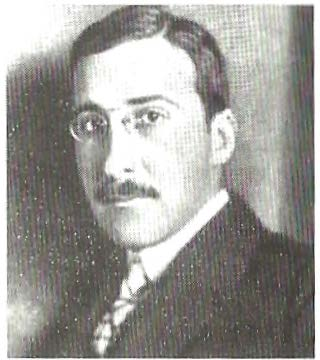
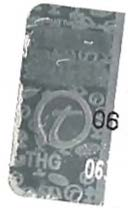
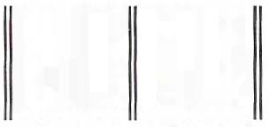

ayakta tutmaya ve Hitler'den korumaya çalışan Dollfuss
hükümeti her geçen gün daha umutsuzca son bir dayanak bulmaya çalışıyordu. Fransa ve İngiltere uzak duruyor ve Avusturya' da olanlar onları ilgilendirmiyordu, Çekoslovakya ise Viyana'ya karşı hala eski düşmanlığını
ve rekabetini sürdürüyordu - böylece Alp geçitlerini ve
Trieste'yi korumak için Avusturya üzerinde ekonomik
ve siyasi bir koruyuculuğa kalkışan İtalya kalıyordu geriye. Ancak Mussolini bu koruyuculuk için ağır bedeller talep ediyordu: Avusturya faşist eğilimlere uyum sağlayacak, parlamentodaki farklı sesleri susturacak ve böylece demokrasiyi yok edecekti. Bu da Avusturya'nın en güçlü,
en iyi örgütlenmiş Sosyal Demokrat Partisi'ni ortadan kaldırmadan ya da haklarını elinden almadan mümkün de
ğildi. Bunu yapmak için de kaba kuvvete başvurmaktan
başka çıkar yol yoktu.
Böyle bir terörist eylem için Dollfuss'un selefi lgnaz
Seipel "Vatan Savunucuları" denilen bir örgüt kurmuştu.
Dıştan bakıldığında insanın zavallı diyebileceği bir hali
vardı bu örgütün, küçük taşra avukatları, ordudan atılmış subaylar, karanlık tipler, işsiz mühendisler, her biri hayal kırıklığına uğramış, birbirinden ölesiye nefret eden
sıradan insanlar. Sonunda bir zamanlar Hitler'in dizinin
dibinden ayrılmayan, cumhuriyete ve demokrasiye kaqı
çıkmış, şimdilerde ise kiralık askerleriyle Hitler karşıtı
biri olarak ortaya çıkıp "kelleleri uçuracağına" söz veren
Prens Starhemberg'i lider seçmişlerdi. Bu örgütün olumlu neler getireceğini hiç kimse bilmiyordu. Örgütün asıl hedefi iktidara gelmekti ve sahip olduğu tek güç, kendisini ileriye taşıyacak Mussolini'nin yumruğuydu. Bu söz-4 3 7
de vatanperver Avusturyalılar, İtalya' dan gelen süngülerle kendi bindikleri dalı kestiklerinin farkında değillercli.
Sosyal Demokrat Parti asıl tehlikenin nerede oldu
ğunu daha iyi biliyordu. Aslında açık açık savaşmaktan
da çekinmezdi. Bunun için gerekli araçları da vardı, örne
ğin genel bir grevle tüm demiryollarını, su ve elektrik
tesislerini felce uğratabilirdi. Fakat Hitler'in kurtarıcı
olarak Avusturya'ya girmek için böyle bir bahaneyi, "Kızıl Devrim" gibi bir şeylerin olmasını beklediğini biliyordu. Bu nedenle az da olsa bir şeyler kurtarabileceği bir uzlaşma sağlamak uğruna sahip olduğu hakların büyük
bir kısmını ve hatta parlamentoyu feda etmek daha iyi
gibi görünüyordu. Aklı başında olan herkes, Hitlerciliğin
tehdidi altındaki Avusturya için böyle bir dengeyi uygun
buluyordu. Hatta kurnaz, hırslı fakat aynı zamanda çok
gerçekçi olan Dollfuss bile böyle bir anlaşmadan yanaydı. Fakat genç Starhemberg ve sonrasında Dollfuss'un öldürülmesinde tuhaf bir rol oynayan adamı Binbaşı Fey,
koruyucu birliğin tüm silahlarını bırakmasını ve her türlü demokratik vatandaş özgürlüğünün yok edilmesini talep ediyorlardı. Sosyal Demokratlar bu talebe karşı çıktılar, karşılıklı tehditler başladı. Herkes bir kararın verileceği anın yakın olduğunu hissediyordu, bu genel gerilim ortamında farkında olmadan Shakespeare'in şu sözlerini
hatırladım: "Sa faul a sky clears not witlıout a storm."1
Salzburg' da sadece birkaç gün kaldım ve sonrasında
Viyana'ya geçtim. Tam da bu ocak günlerinde fırtına
koptu. "Vatan Savunucuları Örgütü", orada olduğunu
sandıkları silahları ele geçirmek için Linz'deki işçi evine
1 . (İng.) Böyle bir hava fırtına kopmadan açılmaz. (Ç.N.)
4 3 8
baskın düzenlediler. İşçiler buna genel grevle yanıt verdiler. Dollfuss ise bu suni "devrim"i bastırma emrini verdi.
Böylece ordu makineli silahlar ve toplarla Viyana'daki iş
çilerin evlerine saldırdı. Üç gün boyunca bütün evlere
savaş açıldı; Avrupa' da İspanya' dan sonra şimdi de burada
demokrasi, faşizme karşı savaşıyordu. İşçiler üç gün dayandılar, sonunda teknik gücün üstünlüğüne yenildiler.
Bu üç gün zarfında Viyana'daydım. Demokrasi ile
faşizmin arasındaki savaşın kesin sonucunun belirlenece
ği mücadeleye tanık oldum ve Avusturya'nın bağımsızlı
ğının intiharını gördüm. Fakat dürüst bir tanık olmak
istediğimden, ilk bakışta çelişki gibi gelse de, bu devrimi
kendi gözlerimle görmediğimi söylemek zorundayım.
Yaşadığı dönemin dürüst ve net çehresini göstermek isteyen kişinin, romantik hayalleri düş kırıklığına uğratacak cesareti de olmalıdır. Bence modern ihtilallerin ve ayaklanmaların tekniği ve özelliklerindeki en karakteristik şey, olayların modern ve büyük bir kentin o koskoca alanının sadece küçücük bir bölgesinde geçiyor olması
ve halkın büyük bir kısmının bütün bunları görmemesidir. Çok garip görünse de 1 934 yılının o tarihi Şubat günlerinde ben Viyana'daydım ve Viyana'da cereyan
eden tüm bu önemli olaylardan habersizdim, her şey
olup biterken benim en ufak bir bilgim dahi olmamıştı.
Toplar atılmış, evler işgal edilmiş, yüzlerce ceset taşınmıştı - bunların bir tekini bile görmedim. New York'ta, Londra'da ve Paris'teki her gazete okuru burada neler
olduğunu, biz sözde tanıklardan çok daha iyi biliyordu
ve bu şaşırtıcı fenomeni, yani günümüzde insanların on
cadde ilerisindeki olaylar hakkında kilometrelerce uzaktaki insanlardan daha az şey bilmesini sonraları defalarca yaşadım. Örneğin birkaç ay sonra Dollfuss'un Viyana'da
bir öğleden sonra katledildiğini Londra'da saat beş bu
çukta caddelerdeki ilanlardan öğrenmiş, hemen Viya-
4 3 9
na'ya telefon etmiştim; derhal bağlandığımı görünce şa
şırmıştım Viyana'da Dış İlişkiler Dairesi'nden beş sokak
ötedeki insanların, Londra'da her sokak başındaki insandan daha az şey bildiklerini görünce, şaşkınlığım daha da artmıştı. İşte bu nedenle Viyana'daki bu isyan günleriyle
ilgili sadece olumsuz şeyler anlatabilirim: Artık günümüz
insanı dünyanın çehresini ve kendi hayatını değiştirecek
kadar önemli olaylardan -tesadüfen yanı başında cereyan
etmiyorsa- haberdar olmuyor. O gün benim yaşadıklarım şundan ibaretti: Operanın bale yönetmeni Margarete Wallmann'la Ring Caddesi'ndeki kafelerden birinde buluşmak üzere sözleşmiştik. Ring Caddesi'ne doğru yürüyordum ve aklıma hiçbir şey getirmeden karşıya geçecektim ki, oradan buradan buldukları üniformaları sırtına geçirmiş birkaç silahlı kişi birdenbire yolumu kesip nereye gittiğimi sordu. Kafe J.'ye gideceğimi söyleyince geçmeme izin verdiler. Bu muhafız askerlerin niçin birdenbire caddede bittiğini, amaçlarının ne olduğunu bilmiyordum. Aslında o akşam kentin dış mahallelerinde saatlerce süren bir çatışma ve mücadele olmuş, ancak kentin merkezindekiler bunu duymamıştı bile. Otele dönüp hesabımı çıkarmalarını istediğimde -çünkü ertesi sabah Salzburg'a geri dönmeyi düşünüyordum-, görevli bunun
mümkün olmadığını, çünkü trenlerin çalışmadığını söyledi. Demiryollarında grev yapılıyormuş, ayrıca galiba şehrin dış mahallelerinde bir sorun varmış.
Ertesi gün gazetelerde fazla ayrıntı içermeyen, sadece sosyal demokratların isyan çıkardığı ve bu isyanın da bastırılmak üzere olduğuna dair haberler çıkmıştı. Oysa
gerçekte savaş o gün iyice kızışmıştı ve hükümet makineli tüfeklerden sonra toplarla işçilerin evlerine yürünmesine karar vermişti. Fakat ben topları da duymamıştım. O tarihlerde tüm Avusturya Sosyalistler, N asyonal Sosyalistler ya da Komünistler tarafından işgal edilseydi
440
de, benim haberim olmayacaktı, tıpkı bir tarihte Münih
halkının sabah uyanıp Münchener Neueste Nachrichten
gazetesinden Hitler' in kenti ele geçirdiğini öğrenecekleri ana kadar hiçbir şeyden haberdar olmadıkları gibi.
Kentin dış mahallelerindeki çatışmalar giderek artarken,
iç kısımlarda her şey sakin ve normal seyrinde devam
ediyordu ve resmi açıklamalara inanan biz aptallar, her
şeyin bittiğini ve halledildiğini sanıyorduk. Bir şeyler
araştırmaya gittiğim Milli Kütüphane'de öğrenciler oturmuş her zamanki gibi çalışıyorlardı, bütün dükkanlar açıktı ve insanlar telaşlı değildi. Ancak olayların üçüncü
günü, her şey olup bittikten sonra, gerçeği peyderpey öğrenebildik. Trenlerin henüz çalışmaya başladığı dördüncü günün sabahı Salzburg' a döndüm, sokakta karşılaştığım
iki üç tanıdık Viyana'da neler olup bittiğine dair beni
soru yağmuruna tuttu. Devrimin "canlı tanığı" olması gereken ben, dürüstçe şunu söylemek zorunda kaldım: "Bilmiyorum, iyisi mi, şuradan yabancı bir gazete alın."
Ne gariptir ki ertesi günü bu olaylarla bağlantılı olarak hayatıma dair bir karar vermek zorunda kaldım. Öğleden sonra Viyana'dan ayrılıp Salzburg'daki evime geri döndüğümde, bir yığın kitap düzeltisi ve mektupla kar
şılaştım, hepsini halledebilmek için gece yarısına kadar
çalıştım. Ertesi günün sabahı henüz yatağımdan kalkmamıştım ki, kapım tıklatıldı; kesin bir saat söylemediğim takdirde beni asla uyandırmayan yaşlı hizmetkarımız allak bullak bir yüzle içeri girdi. Aşağıya inmemi, emniyetten beylerin benimle görüşmek istediğini söyledi. Biraz şaşırmıştım, üzerime ropdöşambrımı giyip en alt kata
indim. Evi aramakla görevlendirildiğini belirten dört sivil polis, Cumhuriyetçi Koruma Birliği adına evde sakladığım ne kadar silah varsa hepsini vermemi söyledi.
İtiraf etmeliyim ki, ilk anda şaşkınlıktan hiçbir şey
diyemedim. Cumhuriyetçi Koruma Birliği' ne ait silahla-
441
rın benim evimde ne işi olabilirdi? Olay tuhaftı. Ben hiçbir zaman bir partiye üye olmamıştım, asla politikayla ilgilenmemiştim. Aylarca Salzburg'da değildim, tüm
bunların dışında bu evde silah deposu olduğunu iddia
etmek dünyanın en komik şeyiydi, çünkü kent dışında
ve bir dağın tepesinde olan bu eve silah ve cephane taşıyan birini herkes hemen fark ederdi. Bu nedenle soğukkanlılıkla "Buyurun, arayın," demekten başka söyleyecek söz yoktu. Dört polis evi aramaya başladı, bazı sandıkları açtılar, duvarları yokladılar, fakat aramayı nasıl yaptıklarını görünce bunun formalite icabı olduğunu, içlerinden hiçbirinin ciddi ciddi bu evde bir silah deposu bulunduğuna inanmadığını anladım. Öyle ki yarım saat içinde aramanın bittiğini söyleyip gittiler.
Bu tatsız olayın o tarihlerde beni neden o kadar öfkelendirdiğinin anlaşılması için ne yazık ki artık tarih olmuş bir noktayı belirtmem gerekiyor. Çünkü son yıllarda Avrupa ve tüm dünya, kişisel hak ve vatandaş özgürlüğünün ne kadar kutsal bir şey olduğunu unutmuş
görünüyordu. 1 933 'ten bu yana evlerin aranmaları, keyfi
tutuklamalar, servetlere el koymalar, insanları evlerinden, ülkelerinden çıkarmalar, sürmeler ve aşağılamanın akla gelebilecek her biçimi, neredeyse olağan hale gelmişti; Avrupalı arkadaşlarımdan böyle bir şey yaşamayan kalmamıştı. Fakat 1 934 yılının başları olan o tarihlerde
Avusturya'da bir evin aranması henüz utanç verici bir
şey sayılıyordu. Benim gibi her türlü politikadan uzak,
yıllardır seçmen hakkını bile kullanmamış birinin evinin
aranmasının çok özel bir nedeni olması gerekirdi, vardı
da ve bu, Avusturyalılara özgü bir nedendi. Salzburg polis amiri, her gece bomba ve patlayıcı maddelerle halkı tedirgin eden Nasyonal Sosyalistlere karşı sıkı önlemler
almak zorunda kalmıştı ve aslında böylesi kontroller cesaret işiydi, çünkü o tarihlerde Nazilerin partisi terör 442
tekniğine başlamıştı. Her gün resmi daireler tehdit mektupları alıyordu, N asyonal Sosyalistleri "kovuşturmaya"
devam ettikleri takdirde bunu ağır ödeyecekleri belirtiliyordu, oysa gerçekte -intikam söz konusu ise N asyonal Sosyalistler verdikleri sözleri her zaman yüzde yüz yerine getirmişlerdir- Avusturya'nın en sadık memurları Hitler'in Avusturya'ya girdiği gün1 toplama kamplarına
gönderilmişlerdi. Benim evimin aranmasının gerçek nedeni, böylesi güvenlik önlemlerinin hiçbir ayrım yapmadan herkese uygulanabileceğini göstermekti. Ben ise bu önemsiz gibi görünen olayın arkasında Avusturya'daki
durumun ne kadar ciddi olduğunu, Almanya' nın baskıo,ının ne kadar şiddetlendiğini hissediyordum. Bu resmi ziyaretten sonra evimden hoşlanmamaya başladım ve
içimden bir ses, önemsiz gibi görünen bu olayın gelecekteki büyük saldırıların bir öncüsü olduğunu söylüyordu.
Akşam olduğunda en önemli evraklarımı toplamaya başladım, bundan böyle yurtdışında yaşamaya karar vermiştim ve bu kararım evden ve ülkeden ayrılmaktan çok daha fazla şey ifade ediyordu, çünkü ailem bu evi vatanı
gibi görüyor, bu ülkeyi seviyordu. Benim için ise kişisel
özgürlüğüm, yeryüzündeki her şeyden daha önemliydi.
Dostlarıma ve tanıdıklarıma niyetimi açıklamaksızın iki
gün sonra Londra'ya geri döndüm; oraya vardığımda ilk
yaptığım şey, Salzburg' daki makamlara oradaki kaydımı
sildirdiğimi bildirmek oldu. Bu, vatanımdan kopma konusunda attığım ilk adımdı. Fakat Viyana' da geçirdiğim o günlerden sonra Avusturya' nın her şeyi kaybettiğini
biliyordum - ancak ben bununla neler kaybetmiştim,
işte bunun henüz tam olarak farkında değildim.
1 . Hitler l 938'de Avusturya'yı ilhak etti. (Ç.N.)
443
Can çekişen barış
"The sun of Rome is set. Our day is gone.
Clouds, dews and dangers come; our deeds are done."
SHAKESPEARE "Julius Caesar"1
İngiltere'deki ilk yıllarım benim için pek sürgün sayılmazdı, tıpkı Sorrento'nun Gorki için sürgün sayılmaması gibi. Avusturya, "devrim" denilen o ayaklanmaya ve hemen sonrasında Nasyonal Sosyalistlerin Dollfuss'u
katlederek ülkeyi parçalama girişimlerine rağmen ayakta
kalmıştı. Vatanımın ölüm-kalım savaşı daha dört yıl sürecekti. İstediğim zaman ülkeme geri dönebilirdim, sürülmemiştim, aşağılanmamıştım. Salzburg'daki evimde duran kitaplarıma henüz kimse dokunmamıştı, cebimde
hala Avusturya pasaportum vardı, yurdum hala benim
yurdumdu, ben hala oranın vatandaşıydım - tüm haklara sahip vatandaşıydım. Henüz o korkunç, yaşamayanların tahmin bile edemeyeceği, anlayamayacağı vatansızlık başlamamıştı, gözlerim açık olmasına rağmen tıpkı bir
1 . Battı Roma'nın güneşi. Günlerimiz sona erdi. I Çiy taneleri, bulutlar ve
belaların zamanı şimdi, bizim işimiz bitti.
Shakespeare, Julius Caesar, V. Perde, 111. Sahne. (Ç.N.)
444
kör gibi boşlukta yolumu bulmaya çalıştığım, ayak bastı
ğım her yerden her an, her dakika kovulacağımı bilerek
yaşamak zorunda kalacağım vatansızlık günlerim başlamamıştı. Fakat yolun başındaydım. 1 934 yılının Ocak sonunda Victoria İstasyonu'na indiğimden farklıydı bu
gelişim; sadece bir konuk olarak ayak bastığınız bir kenti, yerleşmeye karar verdiğiniz bir yer olarak seçtiğinizde farklı gözlerle görüyorsunuz. Londra'da ne kadar kalaca
ğımı bilmiyordum. Benim için önemli olan tek şey, yine
çalışmaya başlamak iç ve dış özgürlüğümü savunmaktı.
Bir şeylere sahip olmak yine bir bağ anlamına geleceğinden, bir ev değil de, vazgeçemediğim kitaplarımı koyabileceğim iki kitaplık ve bir yazı masasının sığacağı kadar genişlikte küçük bir daire kiraladım. Böylece bir beyin
işçisine gerekli olan her şeye sahiptim. Konuk davet edecek yerim yoktu, fakat zaten arada bir özgürce seyahat etmek için dar bir mekanda oturmak daha iyiydi: Böylece farkında olmadan hayatımı bir yerde kalmaya, yerleşmeye göre değil, geçici şeylerle geçiştirecek şekilde düzenlemiştim.
İlk akşam -karanlık bastırmıŞtı, duvardaki çatlaklar
hava karardığı için kaybolmuştu- nihayet tamamlanan
küçük daireme girdim ve irkildim. Çünkü o saniye başka
bir daireye girdiğimi sandım, otuz yıl önce Viyana' da hazırladığım ve bunun kadar küçük odası olan dairemi anımsadım, beni selamlayan yine duvardaki kitaplar ve
gittiğim her yerde bana eşlik eden Blake'in "King John"
portresinin dalgın gözleriydi. Gerçekten de kendimi toparlayabilmem için birkaç dakikaya ihtiyacım vardı.
Çünkü yıllardır Viyana'daki o ilk dairemi hiç aklıma getirmemiştim. Bu, o ana kadar genişlemiş olan hayatımın bundan böyle küçülüp eski haline geleceği ve benim de
kendimin gölgesi olacağımın bir işareti miydi? Otuz yıl
önce Viyana'da o küçük daireyi seçtiğimde daha yolun
445
başındaydım. Henüz bir şey, daha doğrusu önemli bir
şey başarmamıştım; henüz ülkemde kitaplarım ve adım
bilinmiyordu. Şimdi ise -tuhaf bir benzerlik- kitaplarım
anadilinden uzaklaştırılmıştı, yazdığım şeyler Almanya' da
bilinmiyordu. Dostlarım uzaktaydı, eski çevrem parçalanmıştı, koleksiyonlar, tablolar ve kitaplarla birlikte evim yok olmuştu; tıpkı otuz yıl önceki gibi etrafımda
yine yabancılar vardı. Otuz yıl içinde yaptığım, denedi
ğim, öğrendiğim, mutlu olduğum her şey rüzgarla savrulup yok olmuş gibiydi, elli yaşın üstünde olan ben, yine başa dönmüştüm, yazı masasında çalışan, sabahları kütüphaneye koşan bir üniversite öğrencisi olmuştum, fakat o yıllardaki gibi inançlı, heyecanlı değildim, saçlarıma aklar düşmüş, yorgun yüreğimin üzerine yılgınlığın alacakaranlığı çökmüştü.
1934'ten 1 940'a kadar İngiltere'de geçirdiğim dönemi anlatmakta tereddüt ediyorum, çünkü neredeyse yaşadığımız bugüne yaklaştık, radyoların, gazetelerin körüklediği huzursuzlukları, umutları ve sıkıntıları hepimiz yaşadık. Dönemin, insanların gözlerini kör, kulaklarını sağır ettiği politikasını ve o politikanın sürüklediği dehşeti bugün anımsadığımızda gurur duymuyoruz; o
dönemi açıklamak isteyen kişi, dönemi kıyasıya eleştirmek zorundadır, ancak içimizden hangimizin buna hakkı var? Dahası, benim İngiltere'de geçirdiğim dönem sadece bir nevi kabuğuma çekilmekti . Bu denli geride durmanın aptallık olduğunu bilmeme rağmen tüm o yarı sürgün ve sürgün yıllarımda toplantıların dışında tuttum
kendimi, çünkü çağın sorunlarının tartışıldığı ve benim
yabancı biri olarak bulunduğum bir.ülkede söz söylemeye hakkım olmadığı gibi tuhaf bir fikre sahiptim. İktidardaki insanların aptallığı karşısında Avusturya'da bir şey 446
yapamamıştım, peki burada, konuk olduğum bu adada
ne yapabilirdim, daha açık, daha net edinilmiş bilgilerle
donanmış birisi olarak, Hitler' in dünyayı tehdit eden bir
tehlike olduğunu nasıl söyleyebilirdim, bunun benim
kendi görüşüm olduğunu düşünmezler miydi? Kuşkusuz bazen hata olduğu açık açık belli olan şeyler karşısında hiç konuşmamak zordur. İngilizlerin özellikle bağlılık, dürüst istekler ve hiçbir şey beklemeden karşındakine
inanmak gibi yüce erdemlerinin eşi benzeri görülmemiş
bir ustalıkla oynanan propagandaya kurban edilişini görmek çok acıydı. Sürekli aynı aldatmacaya başvuruluyordu, Hitler'in tek amacının, Almanları kendi sınırlarına dahil etmek olduğu, bunu başardıktan sonra memnun
olacağı ve sonrasında teşekkür olarak Bolşevikliğin kökünü kazıyacağı söyleniyordu; bu tuzak iyi işliyordu. Hitler bir konuşmasında "barış" sözcüğünü ağzına alıyor, bütün
gazeteler heyecan ve coşkuyla tüm olanları unutuyor ve
Almanya'nın neden öyle çıldırmış gibi silahlandığını sormuyordu. Berlin' e turist olarak giden ve orada çok iyi ağırlanan İngilizler, ülkelerine döndüklerinde oradaki
düzeni ve yeni mimarını anlata anlata bitiremiyorlardı,
böylece İngiltere'de Hitler'in "Büyük Almanya" isteği yavaş yavaş haklı görülmeye başlanıyordu - hiç kimse Avusturya'nın bu surlarda temel bir taş olduğunu ve yerinden oynatılırsa bütün Avrupa'nın sonu olacağını aklına bile getirmiyordu. Ama Avusturya' da SA'ların yüzlerini yakından görmüş ve onların "Bugün Almanya bizim, yarın bütün dünya bizim olacak" marşlarını duymuş biri
olarak, İngilizlerin ve yöneticilerinin saflığını ve iyi niyetini gördükçe gözlerim doluyordu. Politik gerilim arttık
ça, olaylarla ilgili konuşmaktan ve toplum içindeki eylemlere katılmaktan daha çok kaçınıyordum. Eski dünya ülkeleri içinde, çağın olaylarıyla ilgili gazeteye yazı yazmadığım, radyoda konuşmadığım ve kamuya açık hiçbir 447
toplantıya katılmadığım tek ülke İngiltere'dir. Buradaki
küçücük dairemde, otuz yıl önce Viyana'da öğrencilik
yıllarımda olduğundan daha fazla kabuğuma çekilmiş
bir şekilde yaşadım. Bu nedenle İngiltere'yi geçerli bir
tanık olarak göstermeye hakkım olmadığını, savaştan
önce İngiltere'nin gerçek derinliğini, içine kapanıklığını
ve ancak çok büyük bir tehlike karşısında açığa çıkardığı
gücünü tanımadığımı çok sonra itiraf etmek zorunda
kaldım.
Yazarlardan da görüştüğüm çok azdı. Sonraları arkadaşlık kurduğum iki yazar, John Drinkwater1 ve Hugh Walpole2 erken ölümleriyle aramızdan ayrıldı, genç olan
diğerleriyle ise gençliğimden beri üzerimden atamadı
ğım, "foreigner"3 olmamdan kaynaklanan güvensizlik duygusu nedeniyle kulüplere, akşam yemeği davetlerine ve kamuya açık toplantılara katılmayı reddettiğimden pek
sık görüşemiyorduk. Yine de bir keresinde iki zeki insanın, Bernard Shaw ve H.G. Wells'in dıştan bakıldığında şövalyelere has muhteşem tartışmalarından birini görmüş ve inanılmaz bir keyif almıştım. Shaw' da bir öğle yemeğindeydik, sadece çok yakın dostları davet edilmişti, ikisi arasında elektriğe neden olan gizli gerginliği neyin tetiklediğini bilmeyen ben, bir yandan her şeyden habersiz olduğum için kendimi tuhaf hissediyor, öte
yandan da olacakları merak ediyordum. Hafif alaylı bir
şekilde birbirlerini selamlamalarından ikisi arasında bir
görüş ayrılığı olduğu ve kısa bir süre önce bu konuda
anlaşmaya vardıkları ya da şimdiki yemekte varacakları
1 . John Drinkwater ( 1 882-1 937): İngiliz şair, oyun yazarı ve eleştirmen.
1 9 1 O'lar ve l 920'1erin "Georgian Poetry" grubunun tipik edebiyatçılarından
biridir. (Ç.N.)
2. Hugh Walpole (1 884- 1 94 1 ): İngiliz romancı, eleştirmen ve oyun yazarı.
(Ç.N.)
3. (İng.) Yabancı. (Ç.N.)
448
anlaşılıyordu. İngiltere'nin en ünlü bu iki büyük insanı
elli yıl kadar önce "Fabianlar"1 çevresinde o tarihlerde
henüz çok yeni olan sosyalizm için omuz omuza mücadele vermişti. O günden bugüne her ikisi de baskın kişilikleri nedeniyle yollarına birbirlerinden ayrı devam etmişti. Wells, aktif idealizmiyle insanlığın geleceğini kuracağı görüşünde yorulmadan ısrarla devam etmişti; Shaw ise geleceğe olduğu gibi, günümüze de kuşkulu ve alaycı
bakmaya devam etmiş, üstün olduğu keyifli düşünce
oyununu denemeyi sürdürmüştü. Dış görünüşleri de yıllar içinde farklı gelişmişti. Seksen yaşında olmasına rağmen inanılmaz derecede zinde olan Shaw, yemekte sadece fındık ve meyve yiyordu, uzun boylu, zayıf ve sürekli heyecanlıydı. Konuşkan dudaklarından hep keskin bir kahkaha kopuyordu ve çelişkilerinin coşkusuna eskiden olduğundan daha hayrandı; yaşama sevinciyle dolu yetmiş yaşındaki Wells ise, hayatın tadını çıkaran, eskiden olduğundan daha rahat, kısa boylu, kırmızı yanaklı ve ara ara gösterdiği neşenin arkasında inanılmaz bir ciddiyet saklayan bir insandı. Shaw saldırıya geçtiğinde insanın gözünü kamaştırıyor ve karşısındakine yönelttiği saldırı oklarının yönünü hızla ve ustalıkla değiştiriyordu,
diğerinin ise savunma taktiği güçlüydü, her zamanki gibi
sarsılmaz derecede inançlı ve ikna ediciydi. Gördüğüm
kadarıyla Wells buraya sadece dostça yenilecek bir öğlen
yemeği için değil, aynı zamanda esaslı bir tartışma için
gelmişti. Ben bu düşünsel çatışmanın arkasındaki nedenleri bilmediğim için, hakim olan havayı daha çok hissediyordum. Her ikisinin de her hareketinde, her bakışında 1 . Fabian Derneği: Londra'da demoktratik sosyalist bir program temelinde
kurulan ( 1 883-1 884) ve sosyalizme devrim yoluyla değil, bir evrim süreci sonunda ulaşılacağını savunan dernek. Adını Romalı komutan Fabius Maximus Cunctator'dan almıştır. (Ç.N.)
449
ve her sözünde çoğu zaman coşkulu, ancak yine de oldukça ciddi bir dövüş isteği esiyordu; tıpkı mücadeleye başlamadan önce birbirini yoklayan iki eskrimci gibiydiler. Shaw'un zekası daha keskindi. Cevap verdiğinde ya da hamleyi savuşturduğunda gür kaşlarının altındaki
gözlerinde şimşekler çakıyor, espri ve söz oyunlarından
aldığı zevk ve altmış yıl içinde bir virtüözün mükemmelliğine ulaştırdığı ustalığı bir nevi kendini beğenmişli
ğe kadar çıkıyordu. Öfkeden hafif hafif güldüğünde beyaz gür sakalları hareket ediyor, başını hafif yana eğerek, fırlattığı okları isabet etmiş mi, etmemiş mi diye bakıyordu. Al yanaklı, sakin ve yumuk gözlü Wells ise daha sert ve dosdoğru konuşuyordu; onun da aklı inanılmaz
derece hızlı çalışıyordu, fakat parıltılı sözlerle vurmuyor,
aksine rahat ve yumuşak bir doğallığı tercih ediyordu.
Tartışma o kadar keskin ve şimşek hızıyla sürüyordu ki,
adeta bir siper bir vuruş, bir vuruş bir siper şeklinde, sanki şakalaşıyorlarmış gibi oyun oynarcasına devam ediyordu, öyle ki bu fieuret1 oyununu seyreden kişi bu kar
şılıklı saldırı ve savunmayı doyumsuz buluyordu. Fakat
bu hızlı ve sürekli en yüksek düzeyde seyreden diyalogun arkasında İngilizlere has diyalektik, kibar ve soylu bir tarzla disipline edilmiş bir tür düşünsel çatışma yatıyordu. Oyun içinde ciddiyet, ciddiyet içinde oyun vardı, bu da tartışmayı daha heyecanlı yapıyordu. Bu, iki farklı
karakterin sadece nesnel konularda ateşlenen, gerçekte
ise benim bilmediğim nedenler ve onun arkasında yatan
nedenler yüzünden asla değişmeyen sert bir karşılaşmasıydı. Her halükarda İngiltere'nin en iyi iki adamını en iyi anında görmüştüm ve sonraki haftalarda Nation dergisinde bu polemiğin devamını okuduğumda, bizzat ta-1 . Eskrimin bir çeşidi. (Ç.N.)
450
nık olduğum diyalogdan aldığım tadın yüzde birini bile
alamadım, çünkü soyutlaşmış argümanların arkasında
canlı insan yoktu, asıl önemli olan görülmüyordu. Fakat
iki beynin karşılıklı atışarak böylesine parladığına, diyalog sanatının sergilendiği tiyatroda bile ender yaşamı
şımdır, plansız, hazırlıksız ve çok soylu bir şekilde yürütüldüğü için buradaki gibi ustaca bir tartışmaya ne daha önce ne de sonrasında rastladım.
O yıllarda sadece bedenim İngiitere'deydi, ruhum
değil. Hitler'in iktidara gelişinden II. Dünya Savaşı' nın
patlak vermesine kadar geçen süre içinde sıkça seyahat
etmeme, hatta Okyanus'u iki defa aşmama neden olan
şey, Avrupa için duyulan endişe, sinirlerimizi yıpratırcasına duyduğumuz o acılı endişeydi. Beni bu yolculuklara iten neden, belki de dünya henüz apaçık önümüzde uzanıyor ve gemiler barış içinde denizleri aşabiliyorken karanlık günler için yüreğimizi alabildiği kadar izlenim ve deneyimle doldurma isteği idi ya da belki de bizim dünyamız güvensizlik ve çelişkilerle yıkılırken başka dünyaların kurulacağına dair duyduğumuz özlem ve ümitti, hatta belki de bizim ya da benim için geleceğin, Avrupa'nın çok ötesinde olduğuna dair hafif hafif çöken, belli belirsiz bir histi. Amerika Birleşik Devletleri'ne
yaptığım bir konferans seyahati bu güçlü ülkeyi tüm
yönleriyle doğudan batıya, kuzeyden güneye kadar her
köşesini görme fırsatı yarattı. Fakat Uluslararası Pen
Kulübü'nün kongre daveti üzerine gittiğim Güney Amerika'daki izlenimlerim daha güçlüydü; benim için ülkeler ve diller üstü bir dayanışmayı güçlendirmek hiç o anki kadar önemli olmamıştı. Bu seyahatten önce Avrupa'da geçirdiğim son saatler benim için düşündürücü bir uyarı oldu. 1 936 yılı yazında İspanya İçsavaşı başla-4 5 1
mıştı, dıştan bakıldığında bu güzel ve trajik ülkenin iç
çekişmesi gibi görünen savaş, aslında her iki ideolojinin
gelecekteki çatışmaları için yaptıkları hazırlık manevralarıydı. Ben o sırada Southampton'dan bir İngiliz gemisiyle ayrılmıştım ve geminin savaş bölgesine girmemek için her zamanki gibi Vigo Limanı'na yanaşmayacağını
sanıyordum. Tüm yolcuların şaşkınlığı arasında gemi limana girdi ve hatta biz yolculara birkaç saat karaya çıkmamıza izin verildi. Vigo o tarihlerde Franco'nun1 adamlarının elindeydi ve savaş meydanından epey uzaktı.
Buna rağmen o birkaç saat içinde gördüğüm şeyler sıkıntılı düşüncelere dalmama yetti. Franco'nun bayrağının dalgalandığı belediye binasının önünde, çoğunu rahiplerin önüne kattığı köylü giysileri içinde genç delikanlılar gördüm, herhalde yakınlardaki köylerden toplanmıştır,
dedim kendi kendime. ilk anda bu gençlere ne yapılaca
ğını anlamadım. Herhangi bir acil durum için toplanan
işçiler miydi bunlar? Yoksa karınları doyurulacak işsizler
miydi? Fakat on beş dakika sonra bu gençlerin başka giysiler içinde belediye binasından çıktıklarını gördüm. Pırıl pırıl parlayan yepyeni üniformalar giymişlerdi, ellerinde
tüfekler ve süngüler vardı, subayların gözetiminde kendileri gibi pırıl pırıl parlayan yeni otomobillere dolduruldular ve hızla kentten uzaklaştılar. Korktum. Bunu daha önce nerede görmüştüm? İlk defa İtalya'da, sonra
da Almanya' da. Orada da birdenbire böyle kusursuz,
yepyeni üniformalılar, yeni otomobiller ve makineli silahlar ortaya çıkmıştı. Kendime yine şunu sordum: Kim gönderiyor, kim ödüyor bu yeni üniformaları, kim örgütlüyor bu yoksul gençleri, iktidardakilere, seçilmiş parla-1 . Francisco Franco ( 1 892- 1 975): Demokratik Cumhuriyet'in yıkılmasıyla sonuçlanan İspanya İçsavaşı'nda ( 1 936-39) milliyetçi güçlere önderlik eden general. İçsavaşın ardından 36 yıl boyunca ülkeyi diktatörlükle yönetmiştir. (Ç.N.) 452
mentoya, kendi halk temsilcilerine karşı kim kışkırtıyor7
Devletin hazinesi bildiğim kadarıyla resmi hükümetin
elindeydi, aynı şekilde silah depoları da. O halde bu otomobiller, bu silahlar yurtdışından geliyordu ve muhtemelen yakındaki Portekiz sınırından geçiriliyordu. Fakat bunları kim gönderiyordu, kim ödüyordu? Bu yeni bir
güçtü, burada ve orada işbaşında olan, şiddeti seven ve
şiddete ihtiyacı olan bir güçtü, bizim bağlı olduğumuz,
yaşama nedenimiz barış, insanlık, uzlaşmacılık gibi de
ğerleri modası geçmiş zayıflıklar olarak gören bir güç.
Bunlar bürolarında, büyük şirketlerinde saklanan, gençliğin saf idealizmini iktidar hırsları ve kendi çıkarları için kullanan gizli gruplardı. Bu şiddet yanlıları daha yeni,
daha titiz bir teknikle savaşın o eski barbarlığını mutsuz
Avrupamızın üzerine getirmek istiyorlardı. Gözlerimizle gördüğümüz, duyularımızla algıladığımız bir şey ruhumuzun üzerinde binlerce gazete makalesinden ve broşürden daha etkili olmuştur her zaman. Gizli güçler
tarafından silahlandırılan bu genç ve masum insanların,
kendileri gibi masum olan ve vatanlarını savunacak başka insanların üzerine salındığını gördüğüm ana kadar Avrupa'yı nasıl bir tehlikenin beklediğini hiç bu kadar
şiddetle hissetmemiştim. Gemi birkaç saatlik aradan
sonra tekrar hareket ettiğinde aceleyle kabine indim. Sadece dış güçler istedi diye korkunç bir şekilde yerle bir edilecek olan bu güzel ülkeye son kez bakarken içim acıdı; kutsal yurdumuzun, Batı uygarlığının beşiği ve Parthenon'u 1 sayılan Avrupa'nm kendi çılgınlığı nedeniyle kendini ölüme mahkum ettiğini düşündüm.
Arjantin ise bir önceki seyahatimin aksine beni çok
l . Atina Akropolisi'nde Antik Yunan Tanrıçası Athena'ya adanmış, Dor düzeninde tapınak. Adı Athena Parthenos (bakire Athena) kültünden kaynaklanır.
(Ç.N.)
453
mutlu etmişti. Burada da, eski kültürü henüz kanla sulanmamış, nefretle zehirlenmemiş İspanya karşımdaydı, yeni, daha geniş topraklarda korunuyordu. Yiyecek boldu, zenginlik ve bolluk vardı, uçsuz bucaksız yerler vardı ve geleceğin besinleri burada yetişiyordu. İnanılmaz bir
mutluluk ve yeni bir güven kaplamıştı içimi. Binlerce
yıldır kültürler bir ülkeden diğerine dolaşmamış mıydı
hep, ağaçlar baltayla kesilse bile, tohumlar kurtarılmamış mıydı hep, yeni tomurcuklar, yeni meyveler çıkmamış mıydı? Bizden önceki kuşakların ve bizi saran kuşa
ğın başardığı şey hiçbir zaman tamamıyla yok olmamıştır. İnsan yalnızca daha büyük boyutlarda düşünmeyi öğrenmeli ve gelecek zaman dilimlerini hesaplamalıdır.
Kendi kendime sadece Avrupalı değil, Avrupa'nın da ötesinde düşünmeye başlamalı, ölmek üzere olan bir geçmişe kendimizi gömmemeli, tam tersine yeniden doğuşlara katılmalıyız dedim içimden. Çünkü bu milyonluk kentin tüm halkının kongremize gösterdiği içtenlikten
burada yabancı olmadığımızı, bizim yaşamımızın en güzel yıllarını verdiğimiz düşünce birliğine olan inancın burada hala yaşadığını, geçerli olduğunu, etkilediğini ve
bu yeni hız çağında okyanusların bile bizi ayıramadığını
gördüm. Yeni bir görev eskinin yerini almıştı: uzun zamandır düşlediğimiz birlikteliği, beraberliği daha büyük ölçülerde ve daha cesurca kurmaya çalışmak. Yaklaşan
savaşı gördüğümde Avrupa'nın yok olacağını düşünmüşken, güneyde yeniden doğuşu ümit etmeye ve inanmaya başladım.
Doğanın fazla cömert davrandığı, yeryüzünün en güzel kentine sahip, kocaman yüzölçümünde bugün trenlerin, caddelerin ve neredeyse uçağın bile baştan başa geçemediği Brezilya da beni çok etkiledi ve geleceğe dair bana müjdeler verdi. Avrupa'nın aksine burada geçmiş itinayla
korunmuştu. I. Dünya Savaşı'nın getirdiği geleneklere ve
454
ulusların düşüncesine nüfuz eden vahşilik henüz buraya
uğramamıştı. Buradaki insanlar bir arada daha barışçıl ya
şıyorlardı, birbirinden tamamen farklı ırklar arasındaki
ilişkiler bile daha kibardı ve bizdeki gibi düşmanca değildi. Burada insanlar kan, soy sop gibi saçma sapan kuramlara göre bölünmüyordu. İnsan burada hala barış içinde yaşayabilir gibi tuhaf bir his vardı içimde, ufacık bir par
çası için Avrupa devletlerin savaşacağı, politikacıların elde
etmek için mızmızlanacağı buradaki alan, uçsuz bucaksız
zenginliğiyle yarınlar için hazırdı. Buradaki topraklar,
kendisinden yararlanacak, varlığıyla dolduracak insanları
beklemekteydi. Avrupa'nın medeniyet adına başardığı
şey, burada yeni ve başka bir biçimde muhteşem bir şekilde devamını getirebilir ve gelişebilirdi. Gözlerim bu yeni doğanın binlerce çeşit güzelliğini görmekten mutlu,
umutla geleceğe bakıyordum.
Fakat seyahat etmek, hatta başka bir dünyada ve
başka bir gökyüzü altında olmak, Avrupa'yı unutmak ve
Avrupa'nın sorunlarından uzaklaşmak demek değildi.
Doğa, tekniğin buluşlarıyla sırlarını ele geçiren insanoğlunun ruh dünyasını altüst ederek adeta korkunç bir şekilde intikam alıyordu. Tekniğin üzerimizdeki en büyük laneti, günümüzde yaşananları bir an için bile olsa unutmamıza fırsat vermemesidir. Eskiden insanlar felaket dönemlerinde ya yalnızlıklarına sığınıyor ya da kimselerin ulaşamayacağı yerlere çekiliyorlardı; oysa günümüzde insanlar dünyanın herhangi bir yerinde yaşanan kötü bir olayı aynı saatte, aynı saniyede öğreniyor ve aynı acıyı hissediyorlar. Avrupa'dan ne kadar uzaklaşırsam uzaklaşayım, gittiğim her yere yazgısı da benimle birlikte geliyor. Gece yarısı başımın üzerinde güneyin yıldızı Pernambuco'ya indiğimde etrafımda ve caddelerde koyu derili insanlarla karşılaştığımda, gazetelerin ilk sayfasında Barcelona'nın bombalandığı ve birkaç ay önce birlik-4 5 5
te hoş saatler geçirdiğim İspanyol bir arkadaşımın kurşuna dizildiği haberini okudum. Teksas'ta, Houston'dan bir başka petrol kentine trenle yolculuk yaparken, birdenbire birinin adeta haykırarak bağıra çağıra Almanca bir şeyler anlattığını duydum; her şeyden habersiz olan
bir yolcu, trenin radyosunda Alman kanalını çevirmişti
ve böylece Teksas'ın Vadisi'nden geçen bir trende oturan
ben, Hitler'in kışkırtıcı konuşmasını dinlemek zorunda
kalmıştım. Gece gündüz hiçbir yere kaçmak mümkün
değildi; her an ıstırap dolu bir endişeyle Avrupa'yı ve
Avrupa'nın içindeki Avusturya'yı düşünüyordum. Çin'
den Ebro1 ve Manzanares'e kadar büyük bir alana yayılmış bir tehlikenin içinde Avusturya'nın yazgısını düşünmem basit bir vatanperverlik gibi görünebilir. Fakat tüm Avrupa' nın yazgısının bu küçük ülkenin -benim ülkemin- yazgısına bağlı olduğunu biliyordum. Siyasetçilerin I. Dünya Savaşı'ndan sonra yaptıkları hataları görmek için geçmişe şöyle bir bakıldığında, gerek Avrupalı gerekse Amerikalı politikacıların Wilson'un net ve basit planını uygulamadıkları ve bozdukları anlaşılır. Wilson
küçük uluslara özgürlük ve bağımsızlık vermeyi düşünmüş ve bu özgürlük ve bağımsızlığın tüm büyük ve kü
çük devletlerin, kendilerinin üstünde bir birliğin çatısı
altında toplandıkları takdirde kalıcı olacağını görmüştü.
Fakat tüm bu devletlerin üstündeki örgüt -gerçek ve
tam bir milletler cemiyeti- kurulamadığından Wilson'un
programının yalnızca bir bölümü gerçekleştirildiğinden,
yani sadece küçük ulusların bağımsızlığı sağlandığından,
huzur yerine sürekli gerilim yaratılmıştı. Çünkü küçük
devletlerin büyük güç özlemlerinden daha tehlikeli bir
şey yoktur. Küçük devletlerin kurulur kurulmaz yaptık-
1 . İspanya'nın en uzun akarsuyu. (Ç.N.)
456
lan ilk şey, birbirlerine karşı entrika çevirmeleri ve küçücük bir toprak parçası için birbirlerine girmeleriydi; Lehler Çeklerle, Macarlar Rumenlerle, Bulgarlar Sırplarla ve tüm bu rekabet savaşları içindeki ufacık Avusturya dev
Almanya ile birbirine girmişti. Bir zamanlar imparatoru
tüm Avrupa'ya hakim olmuş, bugün ise parçalanmış ve
bölünmüş olan bu ülke -daha önce de söylediğim gibisurlardaki temel taştı. İngiltere'nin bu milyonluk kentindeki insanların farkında olmadıkları bir şeyi, yani Avusturya çökünce Çekoslovakya'nın da çökeceğini ve böylece Balkanlar'ın Hitler'in ganimeti olacağını, Nasyonal Sosyalizm Viyana'ya girdikten sonra, şehrin özel coğrafi
konumu nedeniyle manivelanın Hitler'in acımasız eline
geçeceğini ve Hitler'in istediği zaman bu kolu kaldırıp
tüm Avrupa'yı yerinden oynatacağını ve tüm devletleri
balık gibi avlayacağını biliyordum. Nasıl bir öç alma hırsının Hitler'i Viyana'ya sürüklediğini, onun en sefil haline tanık olmuş bu kente neden zafer kazanmış biri olarak girmek istediğini biz Avusturyalılar biliyorduk. Kısa bir ziyaret için Avusturya'ya her gelişimde ve dönerken
sınırda derin bir nefes alıp "Bu defa da bir şey olmadı,"
derken, sanki bu, ülkemi son görüşümmüş gibi geri dönüp arkama bakıyordum. Kaçınılmaz felaketin gelmekte olduğunu görüyordum. O yıllarda her sabah, diğer insanlar gayet rahat gazetelerini ellerine alırken, ben şu başlığı göreceğim diye için için korkuyordum: Finis Austriae1. Ah, kendimi Avusturya'nın yazgısından kopardığımı sanarak nasıl da kendi kendimi aldatmışım! Ta uzaklardan Avusturya'nın ağır ağır ve sancılı bir biçimde can çekiştiğini gördükçe, vatanperver protestolarla ve her
gün birbirlerine "Fransa ve İngiltere bizi ortada bırak-
1 . (Lat.) Avusturya'nın sonu geldi. (Ç.N.)
4 5 7
maz, hele Mussolini asla izin vermez," diyerek kendi
kendini aldatan ülkedeki dostlarımdan daha fazla acı çekiyordum. Tıpkı hasta insanların güzel etiketli ilaçlara kanması gibi Milletler Cemiyeti'ne, barış antlaşmalarına
inanıyorlardı. Her şeyi daha açık ve net gören benim yüreğim parçalanırken, onlar tasasız ve mutlu yaşamlarına devam ediyorlardı.
Avusturya'ya yaptığım son yolculuğumun tek nedeni, gittikçe yaklaşan felaketin içimde yarattığı korkunun patlak vermesiydi. 1 93 7 yılının sonbaharında yaşlı annemi görmek için Viyana'ya gitmiştim ve uzun bir süre Viyana'da yapacak bir işim kalmamıştı, oraya gitmemi
gerektiren acil hiçbir şey yoktu. Gidişimden birkaç hafta
sonraydı -sanırım kasım sonuydu-, Regent Street'ten
eve gidiyordum, yolda Evening Standard gazetesini aldım. Lord Halifax'ın1 Hitler'le ilk kez yüz yüze görüşmek ve pazarlık yapmak için Berlin' e gittiği gündü. Evening Standard'ın bu baskısından sadece ilk sayfada -sayfanın sağındaki kocaman harflerle yazılmış metin hala gözlerimin önünde- Halifax'ın, Hitler'le bir anlaşmaya
varmak istediği tüm hususlar tek tek sayılmıştı. Onların
arasında Avusturya konusu ile ilgili madde de yer alıyordu. Satır aralarından şöyle bir şey bulduğumu ya da okuduğumu anımsıyorum: Avusturya'nın teslimi, hem zaten Hitler'le bu konunun başka nesi tartışılabilirdi ki? Biz
Avusturyalılar Hitler'in bu konuda taviz vermeyeceğini
biliyorduk. Garip olan şu ki, tartışılacak olan bu konuların "Evening Standard"ın sadece öğle baskısında çıkmış
olması ve aynı gazetenin öğleden sonraki tüm baskılarında iz bırakmadan kaybolmasıydı (Sonrasında kulağıma 1 . Erward Frederick Lindley Wood Halifax ( 1 88 1 -1 959): İngiltere'nin Hindistan genel valisi ( 1 925- 1 9 3 1 ), dışişleri bakanı ( 1 938-40) ve ABD büyükelçisi ( 1 941 -46). (Ç.N.)
458
gelen dedikodulara göre, bu haberi İtalyan elçiliği sızdırmıştı, çünkü 1 937'nin İtalyasının en korktuğu şey, Almanya ve İngiltere'nin gizlice anlaşmasıydı) . Büyük bir çoğunluğun fark etmediği Evening Standard'ın bu baskısında yer alan açıklamanın ne kadarının doğru ne kadarının yanlış olduğunu bilemem. Bildiğim tek şey, Hitler'le İngiltere'nin, Avusturya konusunda pazarlığa oturacağı
düşüncesiyle dehşete kapıldığımdır, gazeteyi tutan ellerimin tir tir titrediğini söylemekten utanmıyorum. Yanlış
ya da doğru, yıllardır hiçbir haber beni bu kadar çok telaşlandırmamıştı, çünkü bu haberde yazılanların bir par
çacığı bile doğruysa, bunun sonun başlangıcı olduğunu
biliyordum ve işte o zaman surlardaki taş düşecek ve o
taşla birlikte tüm surlar çökecekti. Derhal geri döndüm,
"Victoria Station"a yanaşan ilk otobüse atlayıp lmperial
Havayolları'na gittim ve ertesi sabahki uçakta yer olup
olmadığını sordum. Yaşlı annemi, ailemi, yurdumu görmek istiyordum. Tesadüfen bir bilet buldum, alelacele valize birkaç eşya koyup Viyana'ya uçtum.
Arkadaşlarım böyle çabuk ve ani gelişime şaşırmışlardı. Endişemi paylaştığımda ise, nasıl da benimle alay etmişlerdi, hala o eski Yeremya olduğumu söyleyip benimle dalga geçmişlerdi. Yoksa tüm Avusturya halkının yüzde yüz Schuschnigg'in arkasında olduğunu bilmiyor
muydum? Vatanperver Cephe'nin muazzam gösterilerini ballandıra ballandıra anlatıyorlardı, oysa ben daha Salzburg'dayken bu göstericilerin çoğunun, yerini kaybetmemek için verilen emirler doğrultusunda birlik armasını ceketlerinin yakasına taktıklarını ve aynı zamanda Münih'te ne olur ne olmaz diyerek Nasyonal Sosyalistlere kaydolduklarını biliyordum. Büyük yığınların hemen o an gücü elinde bulunduran tarafa koştuğunu
bilecek kadar tarih öğrenmiş ve yazmıştım. Bugün "Heil
Schuschnigg" diye bağıranların, yarın "Heil Hitler" diye
4 5 9
haykıracağını çok iyi biliyordum. Fakat Viyana'da konuştuğum hiç kimse gerçekten endişeli değildi. Birbirlerini smokinli fraklı partilere davet ediyorlar (kısa bir süre
sonra toplama kamplarının mahkum elbisesini giyeceklerinin farkında olmadan), (birkaç ay sonra ellerinden alınacağını ve yağma edileceğini bilmedikleri) güzel evlerine Noel alışverişi yapmak için dükkanlara koşturuyorlardı. Eski Viyana'nın benim de ölesiye sevdiğim ve aslında bir ömür boyu sürmesini hayal ettiğim, Viyanalı
ulusal şair Anzengruber'in de bir defasında kısa bir beyitle "sana bir şey olmaz" diyerek özetlediği o sonsuz gamsızlık, ilk kez yüreğimi sızlattı. Fakat kim bilir belki
de Viyana' daki tüm bu dostlar benden daha bilgeydi,
çünkü onlar her şey olup bittiğinde acı çekmeye başladılar, oysa ben felaketi çok önce görmüş ve acı çekmeye başlamıştım bile, korktuğum gerçekleştiğinde ise ikinci
kez acı çekmiştim. Öyle ya da böyle, ben onları anlayamıyor, kendimi de onlara anlatamıyordum. Gelişimin ikinci gününden itibaren artık kimseyi uyarmadım. Huzurunun kaçırılmasını istemeyen insanların huzurunu niye kaçıracaktım ki?
Fakat şimdi burada söyleyeceklerimin, her şey olup
bittikten sonra abartılarak anlatılan şeyler olarak değil,
gerçeğin ta kendisi olarak algılanmasını istiyorum: içinde
doğup büyüdüğüm Viyana'nın tüm tanıdık sokaklarını,
her kiliseyi, parkı, kentin her bir köşesini o son iki gün
sessizce, içimden "Bir daha asla göremeyeceğim," diye
geçirerek gezdim. Anneme de aynı şekilde bu onu "son
kez" kucaklayışını, diye sarıldım. Bu kentteki, ülkedeki
her şeye "son kez" bakarken, bunun bir veda, bir daha
tekrarlanmayacak son veda olduğunun bilincindeydim.
Yirmi yıl boyunca tüm çalışmalarımı yaptığım evimin
bulunduğu Salzburg'dan geçerken istasyona inmedim
bile. Vagonun penceresinden baksaydım bir sürü anılarla
460
dolu yamaçtaki evimi görebilirdim, fakat pencereden dı
şarıya bakmadım. Niçin bakacaktım ki? Asla bir daha
orada yaşamayacaktım. Tren sınırdan geçerken tıpkı Kutsal Kitap'taki Ltlt Peygamber1 gibi arkamdaki her şeyin toz ve kül olduğunu, acı bir tuza dönüşen bir geçmiş
bıraktığımı biliyordum.
Hitler'in, nefretle dolu rüyasının gerçekleşir de onun
Viyana'ya, gençliğinde yoksul ve başarısız biriyken kovulduğu bu kente bir muzaffer olarak girdiği ve kenti ele geçirdiği takdirde olabilecek tüm korkunç dehşeti önceden tahmin edebildiğimi sanmıştım. FakatAvusturya'nın ve dolayısıyla Avrupa'nın, şiddetin kucağına bir ganimet
gibi itildiği 1 938 yılının 13 Mart günü yaşanan insanlıkdışı olayları hiç kimse hayal bile edemezdi, benim olacaklarla ilgili öngörülerim de yaşananlar karşısında pek hafif, basit ve küçük kaldı. İşte şimdi maske düşmüştü.
Diğer devletler korkularını açık açık belli ettikleri için
vahşetin, ahlaki çekincelerin ardına gizlenmesine gerek
kalmamıştı, istediği gibi davranabilirdi. İngiltere'nin,
l . Yazar burada kendi yaşadıklarını Kutsal Kitap'taki bir öyküye gönderme
yaparak açıklamak istemiştir. Hz. LGt, Hz. İbrahim'in yeğeni ve ona inanan ilk
kişidir. Kuran'a göre Hz. LGt, günahkarlığın, özellikle cinsel sapıklığın simgesi
Sodom ve Gomorra halkı olan kavmini doğru yola çağırmakla görevlendirilir.
Ancak halkı tarafından büyük bir tepkiyle karşılaşır ve çağrısına son vermezse
ülkeden sürülmekle tehdit edilir. Ve kavmin ileri gelenleri onun ve ailesinin
ülkeden çıkarılmasına karar verir. Hz. LGt Tanrı'ya sığınır. Lut kavmi için gazap haberini ulaştıran melekler Hz. İbrahim'e gelirler. Hz. LGt'un ve ona inananların da gazaba uğrayacağından korkan Hz. İbrahim Tanrı'yla konuşur ve Sodom'da en az on doğru insan varsa k<:nti yok etmeyeceğine dair Tanrı'dan
söz alır. Bunun üzerine günahkar kente yönelen melekler Hz. LGt'un evine iki
erkek görünüşünde gelirler. Bunun üzerine Sodomlular evi kuşatıp iki konuğun
kendilerine verilmesini isterler. Hz. LGt halkı kötü niyetinden caydırabilmek
için kendi iki kızını vermeyi teklif eder. Bu öneriyi geri çeviren Sodomlular Hz.
LGt'u tehdit edince melekler kimliklerini açıklar. LGt'un ailesiyle birlikte hiç arkasına bakmadan o gece kentten ayrılmasını isterler. LGt meleklerin buyruğunu yerine getirir. Tan yeri ağarınca halkın Hz. LGt'un evine saldırmasıyla Tanrı'nın
gazabı başlar, Sodom ve Gomorra'ya göklerden taş ve ateş yağar, bütün halk
yok edilir. Hz. LGt'un karısı dönüp arkasına baktığı için gazaba uğrar ve bir tuz
direğine dönüşür. (Ç.N.)
461
Fransa'nın, dünyanın yapacağı ne kalmıştı? - Şimdiye
kadar politik arenadan çıkarmak istediği "Marksistlerin"
kendi çıkarları için kullandığı görüşlerine de ihtiyacı kalmamıştı. Artık sadece yağma ve soygunla yetinilmeyecek, herkes intikam arzusunu istediği gibi giderebilecekti. Üniversite profesörleri çıplak elleriyle sokakları temizlemek zorunda bırakılıyor, inançlı, aksakallı Yahudiler tapınağa sürükleniyor, bağıran gençlere diz çöktürülüyor ve koro halinde "Heil Hitler" diye bağırmak zorunda bırakılıyorlardı. Cadde ve sokaklardaki masum insanlar tavşan gibi yakalanıyor ve SA kışlalarının tuvaletlerini temizlemek için götürülüyorlardı; geceler boyu akıllardan geçen iğrençlik dolu anormal nefret fantezileri gün ışığına çıkıyordu. Evlerin basılıp korkudan tir tir titreyen
kadınların kulaklarından küpelerin koparılması gibi
olaylar yüzlerce yıl öncesinde Ortaçağ savaşlarında yapılan kent yağmalamalarında görülebilirdi; ancak günümüzdeki olaylarda bir yenilik vardı, o da böylesi ruhsal işkenceleri, zekice yapılan aşağılamaları gören insanların
bundan aldığı zevkti. Bu eziyetleri ve işkenceleri tek bir
kişi değil, binlerce insan çekti ve yıllar sonra bizimki gibi
ahlaki açıdan çökmüş ve bitmiş bir dönemde değil de,
daha sakin bir zamanda yaşayan insanlar, içi kin ve nefretle dolu tek bir insanın 20. yüzyılda bu kültür kentinde neler yaptığını tüyleri ürpererek okuyacaklardır.
Çünkü bu, Hitler'in şeytani zaferiydi, askeri ve politik
başarılarının ortasında gittikçe yükselirken her türlü hukuk kurallarını da etkisiz bırakmayı başarmıştı. Bu "yeni düzen" öncesinde tek bir insanın bile mahkeme önüne
çıkarılmadan ve hele hele sebepsiz yere öldürülmesi
tüm dünyayı sarsardı, işkence ise 20. yüzyılda kimsenin
aklından bile geçmezdi, insanın sahip olduğu şeyleri zorla elinden almak ise açık ve net olarak soygunculuk ve hırsızlık demekti. Oysa şimdi, sürekli birbirini takip
462
eden Bartholomeus gecelerinden1, SA hücrelerinde ve
dikenli teller arkasında her gün ölümüne yapılan işkencelerden sonra haksızlıkların ve dünyevi acılarının ne önemi vardı ki? 1 938'de Avusturya'dan sonra dünyamız
da yüzyıllardır görülmemiş insanlıkdışı olaylara, hukukun çiğnenmesine ve vahşete alışmıştı. Eskiden olsa sadece bu talihsiz Viyana kentinde olanlar bile tüm uluslarda nefret uyandırırdı, oysa l 938'de dünyanın vicdanı susuyordu ya da unutup bağışlamadan önce sadece birazcık homurdanıyordu.
Vatanımdan yardım çığlıklarının yükseldiğini, yakın
dostlarımın yakalandığını, işkence gördüğünü, aşağılandığını duyduğum ve sevdiğim her insan için çaresizlikle titrediğim o günler, hayatımın en korkunç günleridir.
Şunu söylemekten utanmıyorum: Viyana'da bıraktığımız yaşlı annemin ölüm haberi geldiğinde dehşete kapılmadım -zaman yüreklerimizi böyle katılaştırmıştı-, tersine tüm acılardan ve tehlikelerden kurtulup artık güvenli bir yerde olduğu için adeta rahatladım. Annem seksen dört yaşındaydı ve kulakları hemen hemen hiç
duymuyordu, büyük evimizin içinde bir dairesi vardı,
böylece yeni "Ari yasasına" rağmen şimdilik yerinden
atılmayacaktı ve bizler de bir süre sonra kendisini yurtdışına çıkarabileceğimizi umuyorduk. Nazilerin Viyana'daki ilk icraatlarından biri anneme kötü isabet etmişti. Seksen dört yaşında olduğu için ayakta zor kalıyor, günlük küçük gezintilerine çıktığında beş ya da on daki1 . Aziz Bartholomeos Yortusu ya da Kıyımı olarak da bilinir. Paris'te 1 572'de
23 Ağustos'u 24 Ağustos'a bağlayan gece H uguenotlara karşı başlatılan kıyım.
1 6. yüzyıl sonunda Fransa'yı saran Katolikler ile Huguenotlar arasında çıkan
içsavaşlar sırasında yalnızca Paris'te öldürülenlerin sayısının üç bin olduğu bilinmektedir. (Ç.N.) 463
ka zar zor yürüdükten sonra Ring Caddesi'ndeki bir
bankta ya da parkta biraz dinleniyordu. Hitler'in, kentin
efendisi olmasının üzerinden henüz sekiz gün bile geçmemişken insanlıkdışı uygulamaları başlamıştı, Yahudilerin bundan böyle banklarda oturması yasaklandı -
Hitler'in başkalarına haince acı çektirmek amacıyla ilan
ettiği sadist yasaklarından biriydi bu. Yahudilerin servetlerine el koymanın mantıklı ve anlaşılır bir açıklaması vardı, çünkü Yahudilerin ellerinden alınan fabrikalar,
mobilyalar, villalar ve Yahudilerin boşalttığı işyerleriyle
kendi insanlarını doyurabilir, eski yandaşlarını ödüllendirebilirdi; Göring'in resim galerisi, ihtişamını böyle cömertçe bir uygulamaya borçluydu. Fakat yaşlı bir kadına ya da yorgun bir ihtiyara bir dakika soluk almak için
bankta oturmayı yasaklamak yirminci yüzyıla ve milyonlarca insanın çağın en büyük şahsiyeti olarak taptığı bir adama nasip olmuştu.
Çok şükür ki annem, böylesi zorbalıklara ve aşağılanmalara uzun süre katlanmak zorunda kalmadı. Viyana'nın işgalinden birkaç ay sonra öldü ve ben onun ölümüyle ilgili bir olayı anlatmadan geçemeyeceğim; böylesi şeylerin gelecekte tekrarlanmamasını umarak bu ayrıntıların belirtilmesinin önemli olduğunu düşünüyorum. Seksen dört yaşındaki annem bir sabah ansızın bayılıvermiş, gelen doktor, annemin o geceyi belki de çıkaramayacağını düşünerek, ölüm döşeğinde beklemesi için, takriben kırk yaşlarında bakıcı bir kadın getirtmiş. Annemin yegane çocukları olan erkek kardeşim ve ben ne yazık ki onun yanında olamadık, çünkü annemizi ölüm döşeğinde görmek için bile olsa Viyana'ya gitmemiz, Alman kültürünün temsilcilerinin gözünde bir suç sayılacaktı. Bu nedenle en azından annemi son yolculuğunda yalnız bırakmamak için aileden biri, bir kuzenimiz o ak
şamı bizim evde geçirmeyi üstlendi. Bu kuzenimiz o ta-
464
rihte altmış yaşında, sağlığı pek yerinde olmayan bir insandı ve bir yıl sonra o da öldü. Kuzenim yatağını hazırlamak için yan odaya gittiğinde bakıcı kadın gelip -utana sıkıla- yeni Nasyonal Sosyalist yasalara göre ne yazık ki
ölüm döşeğindeki annemin yanında o gece kalamayaca
ğını söylemiş. Kuzenim Yahudi, kendisi ise elli yaşın altında olduğu için ölmek üzere olan birinin başını beklerken bile geceyi Yahudi bir erkekle aynı çatı altında geçiremeyeceğini söylemiş, Streicher'in düşüncesine göre Yahudi bir erkeğin ilk aklına gelecek şey, Ari ırkından bir
kadını kirletmek olurmuş. Kendisi böyle bir kuralı çok
utanç verici buluyormuş bulmasına, ama yasalara uymak
zorundaymış. Bu nedenle altmış yaşındaki kuzenim, bakıcı kadının annemin yanında kalabilmesi için gece vakti evden çıkmak zorunda kalmış; annemin uzun süre bu
tip insanlar arasında yaşamak zorunda kalmadığı için
şanslı olduğunu söylememin nedeni, sanırım şimdi daha
iyi anlaşılır.
Avusturya'nın bu durumu, benim özel yaşamımda
başlangıçta tamamen önemsiz ve yalnızca rutin olarak
gördüğüm bir değişikliğe yol açtı; Avusturya pasaportum
iptal edildiği için İngiliz makamlarından pasaport yerine
geçen beyaz bir kağıt, vatansızlara verilen bir pasaport
rica etmek zorunda kalmıştım. Sık sık kurduğum renkli
düşlerde vatansız olduğumda, her şeyin istediğim gibi
güzel olacağını geçirirdim aklımdan, o zaman hiçbir ülkeye karşı bir sorumluluğum kalmaz ve her yere ait olabilirdim. İşte şimdi bir kez daha düşlerimizin ne kadar erişilmez olduğunu ve insanın özellikle öyle duyguları
ancak yaşadıktan sonra anlayabileceğini gördüm. On yıl
önce Paris'te karşılaştığım Dimitri Merejkovski bana, kitaplarının Rusya' da yasaklandığını üzüntüyle anlattığın-465
da, bu konularda hiçbir deneyimi olmayan ben, pek fazla düşünmeden onu teselli etmeye çalışmış ve bunun, kitapları tüm dünyada okunan bir yazara zarar vermeyeceğini söylemiştim. Fakat onun neler hissettiğini ve bir yazar için eserlerini sadece soluğunu kaybetmiş, değişmiş ya da değiştirilmiş çevirilerde görmesinin ne demek olduğunu ancak benim kitaplarım da Alman dilinden silindiğinde anladım. Aynı şekilde bir İngiliz resmi dairesinin salonunda dilekçe başvurusu için uzun süre bekledikten sonra içeriye kabul edildiğim ilk anda, pasaportumu yabancı bir kağıtla değiştirmenin ne demek olduğunu anladım: Çünkü Avusturya'da pasaport almak en doğal hakkımdı. Her Avusturya konsolosluğundaki bir
memur ya da polis görevlisi bana tüm haklara sahip vatandaş pasaportu vermekle yükümlüydü. İngilizlerin yabancılara verdiği kağıda ise ancak dilekte bulunarak sahip oluyordum. Bu, dilek karşılığında verilmiş bir lütuftu ve bu lütuf her an geri çekilebilirdi. Bir anda bir basamak aşağıya inmiştim. Daha dün yabancı bir konuktum, dünyanın her köşesinden gelen gelirini burada harcayan,
vergisini veren bir beyefendiyken bir anda bir göçmen,
bir refugee1 olmuştum. Onursuz sayılmasa da daha alt bir
sınıfa inmiştim. Ayrıca bundan böyle bu beyaz kağıda
verilecek her yabancı vize için özel olarak müracaat etmem gerekecekti, çünkü tüm ülkeler gerektiğinde sınırdışı edemeyeceği, yük olmaya başladıklarında ya da fazla uzun bir süre kaldıklarında diğer göçmenlere yaptıkları
gibi ülkesine geri göndermeyecekleri, benim de birdenbire onlardan biri olduğum bu "tür" insanlara, tüm haklardan yoksun, vatansız insanlara kuşkuyla bakıyordu.
Bunları yaşadıkça yıllar önce sürgündeki bir Rus'un şu
1. (Fr.) Sığınmacı. (Ç.N.)
466
sözleri aklıma geliyordu: "Eskiden insan denen varlık bedenden ve ruhtan oluşuyordu. Bugün ise bir de pasaportunun olması gerekiyor, aksi halde insandan sayılmıyor."
Gerçekten de I. Dünya Savaşı'ndan bu yana dünyanın ne kadar gerilediğini, kişinin hareket özgürlüğünün ne kadar sınırlandırıldığını ve özgürlük haklarının nasıl
düştüğünü hiçbir şey bu belge kadar anlatamaz. 1 9 1 4
yılından önce yeryüzü tüm insanlığa aitti. Herkes istedi
ği yere gidebiliyor ve istediği kadar uzun kalabiliyordu.
İzin verme yoktu, kabul etme yoktu. Günümüz gençlerine 1 9 1 4 öncesinde Hindistan' a ve Amerika' ya gittiğimi, pasaportum olmadığını ya da hiç pasaport görmedi
ğimi anlattığımda, nasıl şaşırdıklarını görünce pek eğleniyorum. İnsan dilediği taşıta biniyor, iniyordu, kimseye bir şey sormadan ya da sorulmadan, bugün yapıldığı gibi
yüzlerce formdan bir tanesini bile doldurması gerekmiyordu. İzin kağıdı ya da vize alması gerekmiyor, başka herhangi bir sorunla karşılaşmıyordu; bugün herkesin
herkese karşı duyduğu, adeta hastalık haline gelmiş kuşku nedeniyle gümrük memurları, polisler ve jandarmaların adeta tel örgü oluşturduğu aynı sınırlar, eskiden Kuzey ve Güney kutupları arasındaki sanal meridyen gibi sorunsuzca geçilen sembolik bir çizgiden başka bir şey
değildi. Dünyanın sağduyusunu kaybetmesi dünya sava
şından sonra Nasyonal Sosyalizm ile başladı ve yüzyılımızı salgın bir hastalık gibi saran şu düşünce ile kendini gösterdi: yabancı düşmanlığı ya da en azından yabancı
korkusu. İnsanlar her yerde kendilerini yabancılara karşı
savunuyor, yabancıları her yerde dışlıyordu. Eskiden sadece suçlulara karşı yapılan tüm aşağılamalar, şimdi seyahate çıkan ya da seyahatte olan yabancılara uygulanıyordu. Saçlarınız kulaklarınız görünecek şekilde kısa, sağ
ve sol profilden, önden, fotoğraflarınız çekiliyor, parmak
iziniz alınıyordu, önce başparmağınızın, sonra tüm diğer
467
parmaklarınızın; ayrıca bir sürü belge getirmeniz gerekiyordu, sağlıklı olduğunuza dair belge, aşı olduğunuza dair belge, sabıka kaydı, tavsiye mektupları, davet mektupları, akrabalarınızın adresleri, manevi ve maddi garanti belgeleri getirmek, birkaç nüsha doldurmak ve imzalamak zorundaydınız ve bu evraklardan bir tanesi bile eksik olduğunda işiniz güçleşiyordu.
Bunlar küçük, önemsiz şeyler gibi görünüyor. Hatta
ilk bakışta bunları saymamın, sözünü etmemin basitlik
olduğu bile düşünülebilir. Fakat bu anlamsız "küçük
şeylerle" bizim kuşağımız çok değerli zamanını anlamsızca boşa harcamıştır. Tüm bu yıllar boyunca ne kadar çok form doldurduğumu, her seyahatimde önlerine
koyduğum belgeleri, vergi bildirimlerini, yabancı ülke
belgesi, sınır geçme belgesi, oturma izni belgesi, seyahat
izni belgesi, kayıt ve kayıt silme belgesi için konsoloslukların ve resmi makamların bekleme odalarında ne kadar uzun süre kaldığımı, ne kadar sıklıkla candan ya
da düşmanca davranan, sıkıcı ya da öfkeli memurun
önünde oturduğumu, sınırlarda ne kadar çok arandığımı ve sorguya alındığımı hesapladığımda, işte o zaman genç birer insan iken özgürlüğün yüzyılı, geleceğin dünya kardeşliğinin yüzyılı olacağını düşlediğimiz, inandığımız bu yüzyılda insan onuruna dair ne kadar çok şeyi kaybettiğimizi görüyordum. Bu kısır ve aynı zamanda
insan ruhunu alçaltan, bitmek tükenmek bilmeyen ricalar ve yalvarmalar yüzünden üretkenliğimizden, yaratıcılığımızdan ve fikirlerimizden ne kadar da çok şey kaybetmiştik. Çünkü o yıllarda hepimiz fikir eserlerinden çok, resmi tüzükleri okuyorduk, yabancı bir kente, yabancı bir ülkeye geldiğimizde ilk iş olarak eskiden oldu
ğu gibi müzelere ve kırlara değil, "izin almak" için konsolosluğa, polise gidiyorduk. Eskiden bir araya geldiğinde B audelaire'in şiirleri hakkında konuşan, idealist bir 468
tutkuyla sorunlar üzerinde tartışan bizler, resmi sigortalar ve izin belgesi hakkında konuşuyor, sürekli bir vize için mi, yoksa turist vizesi için mi başvursak, diye tartı
şıyorduk. Son on yılda, konsoloslukta bekleme sürenizi
kısaltacak bir memuru tanımak, bir Toscanini ya da bir
Rolland ile arkadaşlık kurmaktan çok daha önemliydi.
Sürekli olarak şunu aklımızdan çıkarmamamız gerekiyordu: Özgür bir insan olarak doğmuş olmamıza rağmen özne değil birer nesneydik ve artık hiçbir şey hakkımız değil, sadece resmi makamların bize verdiği bir lütuftu. Sürekli olarak sorguya alınıyor, bir yerlere kaydediliyor, fişleniyor, işleniyor, damgalanıyorduk ve özgür dönemin bir insanı olan ben bütün bunları kabul edemiyordum, düşlediğimiz dünya cumhuriyetinin bir
vatandaşı olduğunu sanan ben, bugün pasaportumdaki
her bir damgayı, her soruşturmayı ve aranmayı bir aşa
ğılanma olarak görüyordum. Bunlar küçük şeylerdi, her
zaman da küçük şeyler olagelmişlerdi, insan hayatının
değerinin, paranın değerinden daha hızlı düştüğü günümüzde de küçük şeylerdi, bunu biliyorum. Fakat insan ancak bu belirtileri bir yerlere kaydettiği takdirde gelecek kuşaklar iki dünya savaşı arasındaki dünyamızı saran düşünsel ilişkilere ve düşünsel bozukluklara ilişkin doğru bir klinik teşhis koyabilir.
Belki de ben aşırı şımartılmıştım. Hatta belki de benim hassasiyetim son yıllardaki sert değişimlerle yavaş
yavaş yıpranmıştı. Sürgünün her biçimi kaçınılmaz olarak insanın dengesini altüst ediyor. İnsan kendi topraklarının üzerinde değilse -bunu anlamak için de yaşamak gerekiyor-, normal davranışından uzaklaşıyor, güvenini
kaybediyor, kendinden kuşku duymaya başlıyor. Yabancı
belgelerle ya da pasaportlarla yaşamaya başladığım günden beri kendi benliğimle tam bir uyum içinde olmadığımı itiraf etmekten çekinmiyorum. Asıl ve kendi Ben' im-469
de doğal olan bazı şeyler sonsuza dek yok oldu. Doğamda var olandan daha çekingen oldum ve -bir zamanlar kozmopolit kişiliğe sahip olan ben- yabancı bir ülkenin
havasını her soluyuşumda sürekli minnettar olmam gerektiği duygusundan kurtulamıyorum. Ayık kafayla, dü
şüncelerden arındığımda bunun çok delice ve saçma olduğunu biliyorum, fakat mantık ne zaman duygulara karşı bir şey yapabilmiştir ki? Yarım yüzyıl boyunca yüreğimi, bir dünya vatandaşının yüreği gibi atması için eğitmemin bana hiçbir yararı olmadı. Hayır, elli sekiz ya
şında bir insan olarak pasaportumun elimden alındığı
gün, insanın yurtsuz kaldığında etrafı çevrili bir vatandan çok daha fazla şeyini kaybettiğini anladım.
Fakat bu güvensizlik duygusunu taşıyan sadece ben
değildim. Yavaş yavaş tüm Avrupa'ya yayılan bir huzursuzluk başlamıştı. Hitler Avusturya'yı ele geçirdiğinden beri siyasi ufuk kararmıştı, kendi ülkesinin barış içinde
kalması umuduyla Hitler'in yolunu açan aynı İngiltere
de kara kara düşünmeye başlamıştı. 1 938 yılından itibaren Londra'da, Paris'te, Roma'da, Brüksel'de, ne kadar uzak ve düşük bir ihtimal de olsa, her yerde tüm konuşmalar dönüp dolaşıp aynı konuya geliyor ve aynı sorular soruluyordu: Savaşı engelleyebilir miyiz, nasıl engelleyebiliriz ya da nasıl kendimizden uzaklaştırabiliriz? Avrul?a'da sürekli var olan ve gittikçe artan savaş korkusunun olduğu o ayları gözümün önüne getirdiğimde, insanların yalnızca iki ya da üç gün kendilerini güven içinde hissettiğini, ikişer, üçer gün bir kez daha, son kez daha bulutların dağılacağını ve yine barış içinde yaşayacaklarını ve eskiden olduğu gibi özgürce nefes alacaklarını hissettiklerini hatırlıyorum. Fakat ne kadar sapıkça bir
şeydir ki, özellikle bu iki ya da üç gün, günümüz tarihi-
4 70
nin en karanlık günleri olmuştu: Chamberlain ile Hitler'in Münih'te bir araya geldiği günlerdi bu günler.
Köşeye sıkışan Chamberlain ile Daladier'nin Hitler
ve Mussolini karşısında teslim bayrağını çektiği günü,
bugün hiç kimsenin hatırlamak istemediğini biliyorum.
Fakat ben burada, tarihi bir gerçeğe hizmet etmek istediğim için İngiltere'de o üç günü yaşayan herkesin fevkalade sevindiğini söylemek zorundayım. 1 938 Eylülü' -
nün o son günlerindeki durum hiç iç açıcı değildi. Chamberlain ikinci kez görüşmek için Hitler'e gitmiş, uçakla dönmüştü, birkaç gün geçtikten sonra herkes olayın içyüzünü öğrenmişti. Chamberlain, Hitler'in daha önce Berchtesgaden'da kendisinden talep ettiği şeyleri kabul
etmek için Godesberg'e gitmişti. Fakat Hitler'in birkaç
hafta önce yeterli gördüğü istekleri şimdi artık onun güç
isterisine yetmemeye başlamıştı. Anlaşma ve "Dene ve
Bir Daha Dene" politikası sefil bir şekilde çökmüştü ve
İngiltere'deki o iyimserlik dönemi bir gecede son bulmuştu. İngiltere, Fransa, Çekoslovakya ve Avrupa'nın önünde tek bir seçenek vardı: Ya Hitler'in zorba güç istemi karşısında diz çökecek ya da silahla karşı koyacaktı.
İngiltere çok kararlı görünüyordu. Silahlanma uzun süre
gizli gizli değil, tam tersine açık açık meydan okurcasına
yapıldı. Birdenbire işçiler göründü, Londra'nın parklarının ortasında, Hyde Park'ta, Regent Park'ta ve özellikle Alman Elçiliği'nin karşısında bombalı saldırı tehdidine
karşı sığınaklar oluşturdular. Donanma savaşa hazırlandı,
genelkurmay subayları son önlemleri birlikte gözden ge
çirmek için Londra-Paris arasında mekik dokumaya başladılar, vakit geçmeden canlarını kurtarmak isteyen yabancılar Amerika'ya giden gemileri doldurdu; 1 9 1 4'ten beri İngiltere'de böyle bir uyanış görülmemişti. İnsanlar
çok daha ciddi, tamamen düşüncelere dalmış bir halde
yaşıyor, evlere ve dopdolu caddelere bakıp tüm bunlar
4 7 1
belki de yarın bombalarla yerle bir edilecek, diye geçiriyorlardı akıllarından. Kapılar arkasında duran ya da oturan insanlar haber saatinde radyonun çevresinde toplanıyordu. Her insanda ve ülkenin her yanında, her saniye gözle görülmeyen, ancak hissedilen bir gerginlik vardı.
Sonrasında parlamentonun o tarihi oturumu yapıldı
ve Chamberlain Hitler'le anlaşmayı bir kez daha denediğini, bir kez daha denediğini, üçüncü denemesinde ağır bir tehdit altında olan barışı kurtarmak için Hitler'e,
Almanya' da herhangi bir yerde buluşmayı teklif ettiğini
söyledi. Teklifine henüz yanıt gelmemişti. Derken oturumun tam ortasındayken, Hitler'le Mussolini'nin Münih'te ortak bir görüşmeyi kabul ettiğini bildiren o telgraf geldi ve o saniye İngiliz tarihinde o güne kadar görülmemiş bir şey yaşandı, İngiliz Parlamentosu'ndakiler kendini kaybetti. Milletvekilleri yerlerinden fırladı, çığlıl<lar atmaya alkışlamaya başladılar, dinleyicilerin sıralarından sevinç çığlıkları gelmeye başladı. Bu saygın parlamento binası yıllardır hiç böylesi bir sevinçle sarsılmamıştı. Barışın hala kurtarılabileceğine inanan İngilizlerin o ölçülü ve soğukkanlı tavırlarını bırakıp tüm samimiyetleriyle coşkularını göstermeleri insancıl açıdan fevkalade etkili bir gösteriydi. Fakat politik açıdan bu sevinç gösterisi çok büyük bir hataydı, çünkü bu vahşice sevinç
gösterisiyle parlamento ve ülke, savaştan nasıl da tiksindiğini, barış uğruna her türlü fedakarlığa hazır olduğunu, çıkarlarından ve hatta onurundan vazgeçebileceğini göstermişti. Chamberlain'ın takip edeceği yol baştan
belliydi, Münih'e barış için mücadele etmeye değil, barış
dilenmeye gidiyordu. Fakat o günlerde hiç kimse onu
nasıl bir teslimiyetin beklediğini bilmiyordu. Herkes
-inkar etmiyorum, ben de dahil- Chamberlain'ın Münih'e tüm koşulları kabul etmek için değil, barış görüşmeleri için pazarlık etmeye gittiğini sanıyordu. Sonra 472
meraklı, yakıcı bir bekleyiş başladı, iki gün geçti, üç gün
geçti, tüm dünya nefesini tutmuş bekliyordu. Parklarda
sığınaklar kazılıyor, savaş fabrikaları işliyor, savunma bataryaları yapılıyor, gaz maskeleri dağıtılıyor, çocukların Londra'dan uzaklaştırılması planlanıyor ve insanların
anlamadığı, fakat herkesin ne için yapıldığını çok iyi bildiği gizli hazırlıklar sürüyordu. Derken yine herkesin gazete ve radyolardaki haberlere kulak kesildiği bir sabah, bir öğle, bir akşam ve bir gece geçti. 1 9 1 4 yılının Temmuz' unda olduğu gibi korku ve sıkıntıyla evet ya da
hayır yanıtını bekleyiş başladı.
Derken şiddetli bir rüzgarın iyice bastıran bulutları
dağıtması gibi yürekler hafifledi, insanlar rahat bir nefes
almaya başladı. Hitler ve Chamberlain'ın, Daladier ve
Mussolini'nin tamamen anlaştığı haberi gelmişti, dahası
da vardı, Chamberlain Almanya ile iki ülke arasında gelecekte çıkabilecek tüm anlaşmazlıkları çözebilecek bir uzlaşma sağlamayı başarmıştı. Görünen o ki, aslında sıradan ve sert bir devlet adamının vazgeçmediği barış çabalarının kesin bir zaferiydi bu ve herkesin yüreği ona duyduğu minnetle çarpıyordu. Radyo çok şey görmüş
geçirmiş olan bizim kuşağa "peace far our time" haberini
duyurdu; yine barış içinde yaşayacaktık, yine endişe ve
tasadan uzak olacaktık, yine yeni ve daha iyi bir dünyanın kurulması için çalışacaktık. Sonradan inkar edenler boşuna yalan söylemesinler, hepimiz bu büyülü sözcükten adeta sarhoş olmuştuk. Çünkü yenik olarak yurduna dönen birinin zafer alayı ile karşılanacağına kim inanırdı? Chamberlain'ın Münih'ten döneceği sabah Londra'daki insanlar yığınlar halinde, varacağı saati dakikası dakikasını öğrenip yüz binlerce insan Avrupa' nın barışını, İngiltere'nin onurunu kurtardığına inandığımız bu adamı selamlamak, onu coşkuyla karşılamak için Croydan Havaalanı'na koşar mıydık? Arkasından gazeteler çıkma-473
ya başladı. Gazetede, sert hatlı yüzü aslında öfkeli bir
kuşun kafasına benzeyen Chamberlain'ın gururla ve gülerken çekilmiş bir resmi vardı, uçağın kapısında durmuş, elinde halkına getirdiği en değerli armağanın "peace far
aur time" yazısının olduğu o tarihsel sayfayı gösteriyordu. Akşamleyin sinemalarda aynı sahne gösterildiğinde insanlar oturdukları yerlerden fırlıyor, coşku ve sevinç
çığlıkları atıyor ve dünya için başlamak üzere olan yeni
bir kardeşlik duygusuyla birbirlerini kucaklıyordu. Londra' da ve İngiltere'de yaşayan herkes için bu, eşi benzeri olmayan, yürekleri canlandıran bir gündü.
Böyle tarihi günlerde havayı daha güçlü, daha büyük bir duyguyla hissetmek ve tarihin havasını solumak için caddelerde dolaşmayı severim. İşçiler parklarda sığınak çukuru kazmaktan vazgeçmişlerdi, çevrede toplanmış insanlar gülüyor, durup birbirleriyle konuşuyordu, çünkü peace far our time sayesinde hava bombardımanından korunmak için sığınak yapmaya gerek kalmamıştı; iki delikanlı, "İnşallah bu sığınaklardan tuvalet yapılır,
çünkü Londra'da yeterli sayıda tuvalet yok," diyerek şakalaşıyordu. Herkes gülüşmelere katılıyordu, tıpkı fırtınadan sonra kendine gelen çiçekler gibi insanlar daha sağlıklı, daha canlı görünüyordu. Bir gün öncesinin aksine dimdik ve rahat yürüyorlardı ve başka zaman pek so
ğuk bakan İngilizlerin gözleri canlı bir ışıltıyla parlıyordu. Artık bombalanacağı tehdidi kalmayan evler daha bir parlıyordu, otobüsler daha süslüydü, güneş daha aydınlık, daha parlaktı, binlerce insanın hayatı sarhoş edici o tek sözcükle rahatlamış ve güçlenmişti. Ben de kendimi çok neşeli ve canlı hissediyordum. Hiçbir yorgunluk duymadan, daha hızlı ve daha rahat yürüyordum, yeniden gelen güven dalgası beni de daha güçlü ve daha ne
şeli kılıyordu. Piccadilly'nin köşesinde birden hızla bir
adam yanıma geldi. Kendisini pek iyi tanımadığım, aslın-
474
da da duygularını dışa vurmayan kendi halinde bir hükümet memuruydu. Başka zaman olsa yalnızca birbirimize selam verip geçerdik ve bana bir şey söylemek onun aklının ucundan bile geçmezdi. Fakat şimdi ışıl ışıl
parlayan gözlerle yanıma yaklaşıp "Chamberlain hakkında ne düşünüyorsunuz?" diye sordu, sevinçten adeta uçuyordu. "Hiç kimse ona inanmamıştı, fakat o en doğru
şeyi başardı. Vazgeçmedi ve barışı kurtardı," dedi.
Herkes böyle hissediyordu, o gün ben de öyle hissediyordum. Mutluluk ertesi gün de devam etti. Gazetelerin hepsi coşkulu haberler yazıyordu, borsada kurlar çılgınca yükseliyordu, Almanya' dan yıllardır ilk kez dostça sesler yükseliyordu, Fransa'da insanlar Chamberlain'ın
anıtının dikilmesini öneriyordu. Fakat ne yazık ki tüm
bunlar, sönmek üzere olan bir ateşin son kıvılcımlarıydı.
Sonraki günlerde kötü ayrıntılar peş peşe gelmeye başladı, Hitler'in karşısında nasıl da kayıtsız şartsız teslim olunduğu, yardım ve destek sözü verilen Çekoslovakya'nın nasıl da alçakça feda edildiği haberleri sızmaya başladı. Bir hafta sonra ise, bu kayıtsız şartsız teslimiyetin bile Hitler'e yetmediği ve Hitler'in daha antlaşmadaki imzalar kurumadan tüm maddelerini çiğnediği haberleri geldi. Goebbels, İngiltere'nin Münih'te köşeye sıkıştığını hiç çekinmeden radyoda bas bas bağırarak tüm dünyaya duyurdu. Umudun büyük bir ışığı sönmüştü.
Fakat bu ışık iki gün boyunca yanmıştı, iki gün boyunca
yüreklerimizi ısıtmıştı. O iki günü unutamıyorum ve
unutmak da istemiyorum.
Münih'te gerçekte neler olduğunu anladıktan sonra
biraz tuhaf olacak ama İngiltere'de pek İngilizlerle gÖrüşmedim. Bunun suçu bende, çünkü onlardan ya da onlarla konuşmaktan kaçan bendim, oysa onlara her za-475
mankinden daha fazla hayran olmam gerekiyordu. İngiltere'ye sığınan insanlara çok daha fazla acıyorlar ve yardım etmeye çalışıyorlardı. Fakat İngilizlerle bizim
aramızda bir tür duvar yükselmişti, bir tarafında biz, di
ğer tarafında onlar kalmıştı: Felaket önce bizim üzerimize çökmüştü, onların üzerine çökmesine henüz zaman vardı. Bizler neler olup bittiğini ve daha nelerin olacağını anlamıştık, oysa onlar -kısmen için için bilmelerine rağmen- anlamamakta direniyorlardı. Tüm olanlara rağmen söz sözdür, antlaşma antlaşmadır diyor, mantıklı ve iyi niyetle konuşulduğunda Hitler'le pazarlık yapılabileceği konusunda aptalca ısrar ediyorlardı. Yüzyıllardır devam eden demokrasi geleneğiyle hukuka bağlı olan İngiliz yöneticileri yanı başlarında bilinçli bir şekilde, yeni bir umursamaz ahlaksızlık tekniğinin yükseldiğini, yeni
Almanya'nın işine gelmeyen her konuda uluslararası ilişkilerde ve hukuk alanında geçerli olan tüm kuralları çiğneyeceğini anlayamıyor ya da anlamak istemiyorlardı.
Net düşünen, ileriyi gören ve maceranın her türlüsünü
bir yana bırakmış olan İngilizler her şeyi bu kadar hızlı,
bu kadar kolay elde etmiş bir adamın en olmaz şeyi yapmaya cesaret edeceğine ihtimal vermiyorlardı; hala onun önce diğerlerine -en çok da Rusya'ya- saldıracağına inanıyorlar, hatta ümit ediyorlar ve bu arada onunla bir şekilde uzlaşabileceklerini düşünüyorlardı. Oysa bizler hiç umulmadık şeylerin gerçekleşeceğini bekliyorduk, çünkü dövüle dövüle öldürülen bir dostumuzun, işkence edilen bir arkadaşımızın yüzü gözlerimizin önünden gitmiyordu, bu nedenle bizler daha sert, daha keskin, daha katı gözlerle bakıyorduk: Aşağılanan, kovalanan, haklarından yoksun bırakılan bizler, yağmacılık ve güç söz konusu olduğunda her türlü saçmalık ve yalanın mubah olacağını biliyorduk. Bu nedenle her türlü deneyimden
geçmiş olan bizler ve henüz hiçbir şey yaşamamış olan-
476

lar, biz sürgündekiler ve İngilizler aynı dili konuşmuyorduk; yaklaşan tehlikenin ne kadar büyük olduğu konusunda kendini aldatmayan bizler dışında, İngiltere'de bu gerçeği gören İngilizlerin sayısının çok az olduğunu söylersem, hiç de abartmış olmam. Avusturya'da olduğu gibi, İngiltere' de de yüreğim parçalana parçalana kaçınılmaz sonu önceden görebiliyordum, ancak burada bir yabancı, varlığına katlanılan bir konuk olduğum için herhangi bir uyarıda bulunmaya cesaret edemiyordum.
Böylece kaderin kızgın damgasıyla damgalanmış
bizler, yaklaşan tehlikenin acı tadı dudaklarımızı yaksa
da, bize kardeşçe kucağını açan bu ülke için yüreğimiz
parçalansa da, bir şey yapamıyorduk: Fakat en karanlık
günlerde bile bir düşün insanıyla konuşmanın büyük bir
manevi güç verdiğini, inanılmaz derecede teselli ettiğini
ve yüreğimi güçlendirdiğini, felaketten önceki son aylarda Sigmund Freud ile geçirdiğim o unutulmaz dostça saatlerde iyice anladım. Seksen üç yaşındaki bu hasta
adamın, Hitler'in Viyanası'nda kalmış olmasına aylarca
üzülmüştüm, fakat sonunda Prenses Maria Bonaparte
-Freud'un pek sadık bir öğrencisiydi-, diz çökmüş,
Viyana' da yaşayan bu çok önemli insanı kurtarıp Londra'ya getirmeyi başarmıştı. Artık bir daha göremeyeceğimi sandığım ve en çok saydığım dostlarımdan biri olan Freud'un Hades'ten1 kurtulup adaya ayak bastığını gazetede okuduğum gün, hayatımın en mutlu günlerinden biriydi.
Sigmund Freud'u, yaşadığımız çağda hiç kimsenin
olmadığı kadar insan ruhunun derinliklerine inmiş ve bu
1 . Yunan mitolojisinde yeraltındaki ölüler ülkesi. (Ç.N.)
477
konudaki bilgisini genişletmiş olan bu büyük ve disiplinli düşün insanını inatçılığı ve katılığı nedeniyle kaçık, tuhaf adam olarak değerlendirildiği ve şimşekleri üzerine çektiği Viyana günlerinden beri tanıyordum. Freud bir gerçek fanatiğiydi, ama her gerçeğin de sınırları oldu
ğunun bilincindeydi -bir defasında bana aynen şöyle demişti: "Yüzde yüz alkol olamayacağı gibi, yüzde yüz ger
çek de yoktur�"-, o güne kadar "tabu" sayılan bir alana,
hiç el değmemiş ve korkuyla kaçınılan bir alana, insanın
bilinç ve bilinçaltı dünyasına girerek üniversiteden ve
üniversitenin akademik dikkatliliğinden uzaklaşmıştı.
İyimser-liberal dünya, dürtülerin "mantık" ve "ilerleme"
yoluyla yavaş yavaş baskı altına alınabileceği savlarını, bu
uzlaşmaz adamın bilinçaltı psikolojisiyle acımasızca çürüteceğini ve liberal dünyanın "rahatsız edeni yok say"
yöntemlerinin tehlikede olduğunu ve Preud'un bunu
acımasız bir teknikle açığa çıkaracağını için için hissediyordu. Fakat bu rahatsız edici "yalnız adama" karşı olan sadece üniversite değildi, eski kafalı sinir doktorları grubu değildi, tüm dünya, tüm eski dünya, eski düşünce biçimi, tüm manevi gelenekler ona karşıydı, tüm bir çağ
onun örtüyü kaldırmasından korkuyordu, yavaş yavaş
tüm doktorlar onu boykot etti. Freud muayenehanesini
kaybetti, tezlerini ve sorunlara cesurca yaklaşımını bilimsel açıdan çürütemediklerinden, onun rüya ile ilgili kuramlarını Viyana usulü yok etmeye çalışıp toplum
içindeki toplantılarda onları alaya almaya, aşağılamaya
başladılar. Yalnızca kendisine sadık küçük bir grup, her
hafta yapılan tartışma toplantılarına katılıyor ve böylece
yeni psikanaliz bilimi yeni biçimini almaya başlıyordu.
Freud'un temel çalışmalarından yavaş yavaş hazırlanan
bu düşünsel devrimin tüm boyutlarını tam olarak kavramadığım halde, bu olağanüstü adamın güçlü, manevi yönü, sarsılmaz davranışı beni kendine bağlamıştı. İşte
4 7 8
sonunda karşımızda her genç insanın kendine örnek almayı düşleyebileceği bir bilimadamı vardı; son kanıta ulaşıncaya ve mutlak emin oluncaya kadar her iddiasında son derece dikkatli, fakat bir hipotezin geçerli oldu
ğuna inandığında da hiç sarsılmadan tüm dünyayı karşısına alabilen, sıradan bir insan gibi mütevazı bir kişiliğe sahip, fakat öğretisinin her kuramı için savaşmaya kararlı, ortaya koyduğu ve doğruluğundan emin olduğu ger
çeklere ölünceye kadar sadık bir bilimadamı. Düşün insanları içinde Freud' dan daha korkusuzu düşünülemezdi. Freud düşündüğü hiçbir şeyi söylemekten çekinmezdi; açık açık ve katı bir şekilde söylediği şeylerin, karşısındakileri huzursuz edeceğini, altüst edeceğini bilse bile, bundan çekinmezdi; Freud içinde bulunduğu güç
durumdan kurtulmak için en ufak -şekilsel olarak da
olsa- ödün vermezdi. Şundan gayet eminim: Eğer Freud
sözcüklerine kılıf bulsaydı, "cinsellik" yerine "erotik",
"cinsel dürtü" yerine "Eros" deseydi; hele hele sonuçları
büyük bir katılıkla tespit etmek yerine sadece işaret etseydi, kuramlarının beşte dördünü hiçbir akademik dirençle karşılaşmadan ortaya koyabilirdi. Fakat o, öğretinin ve gerçeğin olduğu yerde uzlaşmaz oluyordu; direnç ne kadar sert olursa, kararlılığı da o kadar sert oluyordu.
Manevi cesaret kavramı için ne zaman bir sembol arasam -bir başkasının kurban olmasını gerektirmeyen, yeryüzündeki yegane kahramanlık- Freud'un dosdoğru ve sakin gözlerle bakan o güzel, erkeksi yüzü gelir gözümün onune.
Yıllardır tüm dünyada tanınmasını sağladığı ülkesinden Londra'ya kaçan Freud geçen yıllar içinde yaşlanmış, üstelik ağır hasta bir adam olmuştu. Fakat kesinlikle yorgun değildi ve beli bükülmemişti. Viyana' da geçirdiği
o ıstırap dolu günlerden sonra onu katılaşmış ve kendini
kaybetmiş bir halde göreceğim diye için için korkmuş-
4 7 9

tum, fakat onu her zamankinden daha özgür ve daha
mutlu buldum. Beni Londra'nın dışındaki evinin bahçesine götürüp bir zamanlar pek sert olan dudaklarıyla hafifçe gülümseyerek, "Şimdiye kadar hiç böyle güzel bir yerde oturdum mu?" diye sordu. Maria Bonaparte'ın
kurtardığı ve pek sevdiği Mısır heykellerini gösterip, "Yine kendi evimde değil miyim?" dedi. Yazı masasının üzerinde müsveddelerinin büyük baskı sayfaları yayılmıştı ve Freud seksen üç yaşında olmasına rağmen her gün
aynı düzgün yazıyla yazmaya devam ediyordu, zihnen
iyi dönemlerinde olduğu kadar açık ve berrak ve aynı
zamanda dinçti; güçlü yazma isteği her şeyin üstesinden
gelmişti, hastalığı, yaşlılığı ve sürgünü yenmişti, uzun
mücadele yıllarında içinde tuttuğu varlığının iyi yanları
ilk defa şimdi özgürce dışarıya fışkırıyordu. Yaşlılık onu
sadece biraz daha yumuşatmıştı, yaşadığı deneyimler
onu daha dikkatli yapmıştı. Eskiden tamamen mesafeli
duran bu insanda şimdilerde yumuşak ve şefkatli davranışlara tanık oluyordum; örneğin elini karşısındakinin omzuna koyuyor ve parlayan gözlüğünün ardındaki gözleri daha sıcak bakıyordu. Tüm yıllarda Freud'la yaptı
ğım konuşmalar bana hep düşünsel açıdan çok büyük
bir zevk vermiştir. İnsan onunla konuşurken hem öğreniyor hem de hayran kalıyordu, her türlü önyargıdan uzak, hiçbir itiraftan çekinmeyen, hiçbir iddiaya sinirlenmeyen ve karşısındakinin her şeyi net olarak görmesi ve hissetmesi için onu eğitmeyi yaşam hedefi haline getirmiş
bu eşsiz insanın her sözüne katılıyordun uz. Fakat onunla
yaptığım o uzun konuşmalardan yeri asla doldurulamayacak olan ve benim minnettar olduğum konuşma, o karanlık yılda, ömrünün o son yılında yaptığım konuşmadır. Odasına girdiğiniz anda dış dünyanın çılgınlıkları dışarıda kalırdı. En korkunç şey soyutlaşır, en karmaşık
şey netleşir ve çağın en güncel şeyleri dize gelip düzen
480
içinde yerini alırdı. Hayatımda ilk kez, kendini aşmış,
acıyı da ölümü de kişisel bir olay olarak değil, kişinin
üstünde bir olay, bir inceleme, gözlemleme objesi olarak
gören bir bilge görüyordum: Ölümü de yaşamı kadar ahlaki bir yiğitlikti. Freud daha o zamanlar onu bizden alan hastalığından mustaripti. Hasta damağıyla konuşmakta
zorlandığı açıkça görülüyordu ve insan ağzından çıkan
her sozcük karşısında utanç duyuyordu, çünkü konuşurken gerçekten çok acı çekiyordu. Fakat o karşısındakine bunu hissettirmemeye özen gösteriyordu; onun çelik gibi
ruhu için, arkadaşlarına isteminin, bedeninin yarattığı o
bayağı acılardan çok daha güçlü olduğunu göstermek çok
önemliydi. Ağzı, çektiği acılardan burkulurken son günlerine kadar yazı masasında çalışmalarına devam etti ve çektiği acılarla uykusu -fevkalade derin, sağlıklı uykusu,
seksen yıl boyunca günün ana kaynağı olan uykusu- bölündüğünde uyku hapı ya da herhangi uyuşturucu bir iğneyi reddediyordu. Tek bir saat bile zihninin aydınlığını
böyle yatıştırıcılarla uyuşturmak istemiyordu; zihninin
pırıl pırıl kalması için acı çekmeye, hiç düşünememektense acı içinde düşünmeye razıydı, son, en son ana kadar düşüncenin kahramanıydı o. Bu korkunç bir mücadeleydi ve sürdükçe daha da yüceliyordu. Her geçen gün ölümün gölgesi biraz daha vuruyordu yüzüne. Yanakları çöküyor, şakakları çukurlaşıyor, ağzı yamuluyor ve sözün dudaklardan çıkmasını engelliyordu: Sadece gözlere, o
cesur beynin dünyaya baktığı, zaptedilemez gözetleme
kulelerine benzeyen o gözlere bir şey yapamıyordu: Gözler ve beyin son ana kadar canlı ve diri kaldılar. Freud'u son ziyaretlerimden birinde bana göre yeni kuşağın en
yetenekli ressamlarından biri olan ve Freud' un da çok
hayran olduğu Salvador Dali'yi de yanımda götürdüm.
Ben Freud ile konuşurken Dali onu resmetmeye başlamıştı. Fakat Dali'nin bu çalışmasını Freud'a göstermeye 48 1
asla cesaret edemedim, çünkü ileri görüşlü olan Dali,
onun yüzünde ölümü çizmişti.
Yaşadığımız çağın en güçlü iradesinin, en keskin dehasının ölüme karşı verdiği bu mücadele gittikçe daha korkunç bir hale geliyordu; açıklık ve netliği düşüncenin
en yüce erdemi olarak gören bu insan, artık yazamayaca
ğını, insanlara faydalı olamayacağını anladığında tıpkı
bir Romalı kahraman gibi doktoruna, acılarını sonlandırması için izin verdi. Olağanüstü bir yaşamın, olağanüstü sonuydu. Bu öldürücü çağın sayısız ölülerinin ortasında
bile düşündürücü bir ölümdü. Arkadaşları olan bizler
tabutunu İngiliz toprağına indirdiğimizde, yurdumuzun
yetiştirdiği en nadide çiçeği buraya gömdüğümüzü biliyorduk.
Freud'la yaptığımız sohbetlerimizde sık sık Hitler
dünyasının ve savaşın korkunçluğunu konuşurduk. Freud, insanı seven biri olarak çok üzülürdü, fakat bir dü
şün insanı olarak kötülüğün böylesinin korkunç bir şekilde patlak vermesine kesinlikle şaşırmazdı. Kültürün, dürtüler üzerindeki üst gücünü inkar ettiği için, hep kötümserlikle suçlanmıştı; onun barbarlık ve ilkel yok etme dürtüsünün insan ruhundan kazınamayacağı hakkındaki görüşü ne yazık ki şimdilerde -tabii ki bununla gurur duymuyordu- en korkunç bir şekilde teyit ediliyordu. Kim bilir belki gelecek yüzyıllarda en azından ulusların toplum yaşamında bu dürtülerin dizginlenmesi için bir yöntem bulunabilir, diyordu; fakat günlük ya
şamda insan doğasının derinliklerinden bu dürtülerin
çıkarılmasının mümkün olmadığını ve hatta bunların
gerilimi sağlayan güçler olarak gerekli olduğunu söylerdi. Son günlerinde onu en çok Yahudilik sorunu ve Yahudilerin günümüzde yaşadığı trajedi meşgul ediyordu; 482
bu konuda bilimadamı olarak bir formül bilmiyordu ve
aydın zekasıyla yanıt bulamıyordu. Kısa bir süre önce
Musa'yı Yahudi olarak değil, bir Mısırlı olarak anlattığı
bir çalışması yayımlanmıştı ve bilimsel temeli hemen
hemen hiç olmayan bu teziyle dindar Yahudileri de, milliyetçi Yahudileri de kırmıştı. Freud bu kitabını, Yahudiliğin en kötü günlerini geçirdiği şu günlerde yayımlamış
olmaktan büyük üzüntü duyuyordu. "Ellerinden her
şeyleri alınırken şimdi de ben en kutsal saydıkları insanı
ellerinden alıyorum," demişti. O günlerde her Yahudi
yedi kat daha kırılgan olduğu için ona hak veriyordum,
çünkü dünyanın yaşadığı trajedinin ortasında asıl kurban onlardı, her yerde kurbandılar, çünkü nerede olurlarsa olsunlar tüm kötülüklerin yedi kat daha fazla ve önce onları bulacağını ve gelecek darbeyi bildiklerinden
korku içindeydiler. Tüm zamanların en nefretle dolu insanının, onları aşağılamak istediğini, dünyanın öbür ucuna da gitseler, yerin altına da girseler, peşlerine düşeceğini biliyorlardı. Her hafta, her ay daha çok sığınmacı geliyordu ve her yeni gelen bir hafta önce gelenlerden daha yoksul, daha perişan bir halde oluyordu. Almanya
ve Avusturya'yı en çabuk terk eden gruplar giysilerini,
valizlerini, ev eşyalarını, hatta bazıları paralarını kurtarabilmişti. Fakat Almanya'dan ayrılamayan, çok sevdiği yurdundan kopamayanlar ise kaldıklarına pişman edilmişti. Yahudilerin önce meslekleri ellerinden alınmıştı, sonra tiyatro, sinema ve müzelere girmeleri yasaklanmıştı, bilimadamlarının kütüphanelerden yararlanmaları engellenmişti; vatanlarına sadakatlerinden, uyuşukluklarından, korkaklıklarından ya da gururlu olduklarından ülkelerinde kalmışlardı. Yabancı bir ülkede bir dilenci gibi aşağılanmaktansa, kendi ülkelerinde aşağılanmayı tercih etmişlerdi. Sonra ellerindeki hizmetkarları, evlerindeki radyoları, telefonları, sonra da evleri alınmış-
4 8 3
tı, en sonunda da kollarına Yahudi yıldızı takmaya mecbur edilmişlerdi; böylece caddede yürüyen her Yahudi adeta bir cüzamlı gibi dışlanıyor, itiliyor, alay ediliyor ve
kimse yanına yaklaşmıyordu. Ellerinden tüm hakları
alınmıştı, kaba kuvvetle ve büyük bir zevkle ruhsal ve
fiziksel işkenceye maruz bırakılmışlardı ve her Yahudi
için, eski bir Rus atasözü korkunç bir şekilde birdenbire
gerçek oluvermişti: "Hiç kimse dilenmeyeceğim, hapse
girmeyeceğim dememeli."1 Ülkeyi terk etmeyenler toplama kampına götürülüyorlardı, orada Alman ehlileştirme yöntemiyle en gururlu olanların bile direnci kırılıyor, sonra da sırtındaki tek giysisi ve cebinde on markla, nereye giderse gitsin diyerek ülkeden kovuluyordu. Sonrasında bir sınırdan ötekine koşmalar başlıyordu, bunu konsolosluklarda yalvarıp yakarmalar, dilenmeler takip
ediyordu, fakat her şey boşunaydı, çünkü soyulmuş, tek
kuruşu olmayan dilenciyi hangi ülke almak ister ki? Bir
defasında Londra'da bir seyahat bürosuna girdiğimde
karşılaştığım bir manzarayı asla unutamam; içerisi mültecilerle doluydu, hemen hemen hepsi Yahudi'ydi ve herhangi bir yere gitmek istiyordu. Neresi olursa, hangi
ülke olursa olsun, Kuzey Kutbu'nun buzuluna ya da
Sahra'nın ateş gibi yakan kumuna, hiç fark etmezdi, yeter ki gitsinler, yollarına devam edebilsinlerdi, çünkü oturma izinlerinin süresi geçmişti, yollarına devam etmek zorundaydılar, kadın, çoluk çocuk yabancı bir gökyüzünün olduğu, yabancı bir dilin konuşulduğu bir ulkeye, hiç tanımadıkları, bilmedikleri ve istenmedikleri başka insanların yanına gitmek zorundaydılar. Onların
arasında bir zamanlar Viyana'nın en zengin sanayicilerinden ve aynı zamanda çok zeki bir sanat koleksiyoncu-1 . Bizdeki "ne oldum değil, ne olacağım demeli", atasözünün karşılığı. (ÇN.)
484
su olan birine rastladım; öyle çökmüş, öyle yaşlanmış,
öyle perişan görünüyordu ki, ilk anda onu tanıyamadım.
Bitkin bir halde iki eliyle masaya yapışmıştı. Nereye gitmek istediğini sordum. "Bilmiyorum," dedi. "Bu günlerde ne istediğimizi kim soruyor ki? Hala gidebileceğimiz neresi varsa oraya gideceğiz. Birisi bana buradan Haiti
ya da San Domingo'ya vize alınabileceğini söyledi." Yüreğim parçalanmıştı; yaşlı ve bitkin bir adam çocukları ve torunlarıyla daha önce haritada bile görmediği bir ülkeye, yine yabancı, amaçsız, bir dilenci gibi oradan oraya sürükleneceği bir ülkeye gitmek için umutla titriyordu.
Yanımızda duran biri ise umutsuz bir şekilde Şanghay'a
nasıl gidileceğini soruyordu. Çinlilerin Yahudileri kabul
ettiğini duymuştu. İşte böyle birbiri ardına insanlar toplanmıştı, bir zamanlar üniversitelerde çalışan profesörler, banka müdürleri, tüccarlar, çiftlik sahipleri, müzisyenler; her biri yıkılmış, acınası varlıklarını denizleri, ülkeleri aşıp yeryüzünün herhangi bir yerine sürüklemeye, başlarına gelebilecek her şeye katlanmaya hazırdı, yeter ki Avrupa'nın dışına, Avrupa'dan uzağa, çok uzaklara gidebilsinlerdi. Bir hayalet sürüsü gibiydiler. Fakat beni en çok sarsan düşünce, çeşitli işkencelere ve eziyetlere maruz kalmış bu elli insanın, arkalarından yollara dökülen beş, sekiz, hatta on milyon Yahudi'den oluşan
kocaman bir ordunun sadece küçücük bir parçası olmasıydı; varı yoğu ellerinden alınmış, savaşta ayaklar altında ezilmiş tüm bu insanlar hayır kurumlarının haberleri, resmi makamların onayı ve verilecek seyahat parası için
bekliyorlardı, ölüm korkusuyla panik içinde Hitler'in
orman yangınından kaçan bu insan yığını, Avrupa'nın
tüm sınır kapılarındaki istasyonları kuşatmışlar ve hapishaneleri doldurmuşlardı, ulus olma hakkından mahrum bırakılmış, yaşadıkları yurtlarından sınırdışı edilmiş, kovulmuş bir ulus; iki bin yıldan sonra tek dileği oradan 485
oraya sürüklenmemek, sürülmemek olan, dolanmaktan,
yer değiştirmekten yorgun düşmüş ayaklarının altında
sakin ve barışçıl bir zemin, bir topraktan başka bir şey
istemeyen bir ulus.
Fakat 20. yüzyılın Yahudi trajedisindeki en trajik
şey, bu insanların niçin acı çektiğini bilmemesi, çektikleri acılarda bir anlam, bir suç bulamamasıydı. Ortaçağ'da yerlerinden yurtlarından edilen cetleri, ataları en azından neden acı çektiklerini biliyorlardı: inançları ve yasaları yüzünden. Onların yüreklerinde bugünkülerin çoktan unuttuğu bir inanç vardı: Tanrılarına olan sarsılmaz güven. Onlar Tanrı tarafından seçilmiş bir ulus olarak
dünyaya ve insanlığa özel bir yazgı ve görevle gönderildiklerine inanıyor ve çılgınca bir gururla yaşıyor ve acı çekiyorlardı. Tevrat'ın umut vaat eden sözleri onlar için
bir emir ve yasaydı . Ateşe atıldıklarında Kutsal Kitap'ı
göğüslerine bastırmış ve içlerinden gelen ateş sayesinde
öldürücü alevleri hissetmemişlerdi. Yaşadıkları her yurttan sürüldüklerinde yine de bir yurtları vardı, hiçbir dünyevi gücün, imparatorun, kralın, engizisyonun gücünün yetmediği bu yurt Tanrı' ya olan inançlarıydı. Dinleriyle birbirlerine bağlı oldukları sürece bir topluluk, bir güç olabiliyorlardı. Yerlerinden yurtlarından edildiklerinde, sürüldüklerinde, bunun nedeni, dinimizin ve geleneklerimizin yeryüzündeki öteki uluslardan farklı olmasıdır, deyip buna katlanıyorlardı. Ancak 20. yüzyılın Yahudileri çoktandır bir topluluk değildi artık. Onların ortak bir inancı yoktu ve onlar Yahudi olmaktan gurur
duymuyor, aksine bunu bir yük olarak görüyorlardı ve
onlar, Tanrı'nın kendilerine verdiği görevin de farkında
değildi. Onlar bir zamanlar kutsal saydıkları kitabın
emirlerinin dışında yaşıyorlar ve eski ortak dillerini artık
kullanmak istemiyorlardı. Çevrelerindeki uluslara alışmak, onlara karışmak, genelin içinde eriyip gitmek için 486
ellerinden gelen çabayı gösteriyorlar, sadece barış içinde
yaşamak, her türlü kovalanmaya, sonsuz kaçışa ara vermek istiyorlardı. Birlikte yaşadıkları uluslarla öyle kaynaşmışlardı ki, birbirlerini anlayamaz hale gelmişlerdi.
Çoktandır artık Yahudi değil, Fransız, Alman, İngiliz ve
ya da Rus'tular. Fakat şimdi tıpkı caddelerdeki pisliklerin
bir yerde toplandığı gibi hepsi bir araya getirilmişti. Banka müdürleri Berlin'deki saraylarından, sinagog hizmetkarları Ortodoks topluluklarından çıkarılmıştı, Parisli felsefe profesörleri ve Rumen arabacıları, ölü yıkayıcıları
ve Nobel ödülü sahipleri, sopranolar ve cenazelerde ağıt
yakan kadınlar, yazarlar ve konyak imal edenler, servet
sahipleri ve hiçbir şeyi olmayanlar, büyükler ve küçükler,
dindarlar ve aydınlar, vurguncular ve bilgeler, Siyonistler
ve başka uluslarla kaynaşıp Yahudiliğini unutmuş olanlar, Aşkenaziler ve Seferadlar, adiller ve adil olmayanlar ve onların da arkasında lanetten kaçtığını sanan Hıristiyan gibi vaftiz edilmişler ve karışmışlar ne olduğunu anlamadan bu sürünün içinde bulmuştu kendisini - yüzyıllar sonra ilk kez Yahudiler tekrar bir topluluk olmaya zorlanıyordu, oysa onlar Mısır'dan kovulduklarında olduğu gibi aynı kaderi paylaşan insanlar olarak bir araya gelmeyi çoktandır unutmuşlardı. Fakat neden hep bu
yazgıyı paylaşıyorlardı, bu yazgı neden sadece onların
başına geliyordu? Bu anlamsız kovalamanın nedeni neydi, anlamı neydi, amacı neydi? Yaşadıkları ülkelerinden kovuluyorlar ancak yaşayacakları bir yer gösterilmiyordu. Bizim yanımızda yaşamayın, deniyordu, fakat nerede yaşayabilecekleri söylenmiyordu, onlara bir suç atfediliyor, fakat bu suçu telafi etmelerine imkan verilmiyordu. İşte bu nedenle kaçarken yanan gözlerle - Neden ben? Neden sen? Neden tanımadığım ve dilini anlamadığım, düşünce tarzını kavramadığım, hiçbir ortak bağımın olmadığı senle ben? Neden biz hepimiz, sorularını 487
soruyorlardı, ancak yanıtı hiç kimse bilmiyordu. Çağın
en büyük dehalarından biri olan ve o günlerde kendisiyle sık sık sohbet ettiğim Freud bile bu saçmalıklara bir anlam veremiyordu. Ama belki de bu Yahudiliğin en
önemli anlamıydı ve bu anlamın, gizemli ve yüzyıllardır
süregelen varlığı sayesinde Eyılb Peygamber'in1 Tanrı'ya
yönelttiği o sonsuz sorunun yeryüzünden silinip gitmemesi, hep tekrar edilmesi içindi.
Çoktandır öldüğünü, gömüldüğünü sandığımız şeylerin aynı biçim ve cisimde birdenbire karşımıza çıkmasından daha korkunç bir şey yoktur. 1 939 yazı gelmişti.
Münih'in o kısa süren peace for our time çılgınlığının üzerinden çok zaman geçmişti; Hitler paramparça olmuş
Çekoslovakya'yı, ettiği tüm yeminlere, verdiği tüm sözlere rağmen işgal etmiş ve kendi topraklarına katmıştı, MemeF de işgal edilmişti. Suni olarak kışkırtılmış ve kudurmuş Alman basını, Polonya koridoruyla birlikte Danzig'i de istemeye başlamıştı. İnançlarına sadık İngiltere' nin uyanışı öfkeli olmuştu. Savaştan nefret ettiğini hiç dışa
vurmayan en sıradan, en basit insanlar bile kızgınlığını
1. Yazar burada Eyüb Kitabı'nda yazılanlarla anlattıkları arasında bir bağ kurmak istemiştir. Eski Ahit'in dünya edebiyatının başyapıtları arasında sayılan bu kitap şiir ve bilgelik kitaplarının ilkidir. MÖ 6. ya da 5. yüzyılda yazılmış kitabın
yazarı belli değildir. Adını, çektiği acıları kavramaya çalışan başkişisinden alan
kitap şiirsel söylemler ve üç konuşma dizisinden oluşur. Bunların her birinde Eyub üç arkadaşıyla tartışır. Eyub'un çektiği acıların anlamı, nedenleri ve bunlara nasıl tepki göstermesi gerektiği araştırılır. EyCıb günahsız olduğunu
savunurken arkadaşları kişisel günahları yüzünden acı çektiğini söyler. İ manından kuşku duymayan Eyub bu açıklamayı doyurucu bulmaz. EyCıb'un Tanrı ile yaptığı konuşma da onun neden haksız yere acı çektiğini açıklamaz. Ama üç
konuşma dizisi, Tanrı'nın insanlara ilişkin takdiri gizemli ve kavranamaz olsa
da dünya işlerini Tanrı'nın belirli bir amaç doğrultusunda yönlendirdiğine dair
Eyub'un inancını pekiştirir. (ÇN.)
2. Litvanya'nın Baltık Denizi kıyısında bir liman kenti. (Ç.N.)
488
öfkeli biçimde dile getiriyordu. Başka zaman hep mesafeli olan her İngiliz karşınıza gelip konuşuyordu; büyük apartmanımızın kapıcısı, asansör görevlisi genç çocuk,
oda hizmetçisi işini yaparken savaştan bahseder olmuştu. Hiçbiri bütün bunların neden olduğunu anlamıyordu, fakat herkesin bildiği bir şeyi, hepsi anımsıyordu, o da İngiltere Başbakanı Chamberlain'ın barışı kurtarmak
için üç kez Almanya'ya gittiği ve Hitler'in ise buna aynı
samimiyetle cevap vermediğiydi. İngiliz Parlamentosu'nda birden sert bir şekilde "Stop aggression!"1 sesleri yükselmeye başlamıştı, her yerde savaş için (daha doğrusu savaşa karşı) hazırlıklar başlamıştı: Yine o açık renkli savunma balonları -tıpkı çocukların gri renkli oyuncak filleri gibi masumdular- Londra üzerinde süzülmeye
başladı, yine hava saldınsına karşı sığınaklar konuşulmaya ve dağıtılan gaz maskeleri itinayla kontrol edilmeye başlandı. Kentteki hava tıpkı bir yıl önce olduğu gibi gergindi, hatta daha da gergindi, çünkü bu defa hükümetin arkasındaki halk, her şeye inanan saf bir halk değil, kararlı ve öfkeli bir halktı.
O aylarda ben Londra'dan ayrılmış ve taşraya, Bath'
teki evime çekilmiştim. İnsanın dünyada olup bitenlere
karşı güçsüz, aciz kalmasının bu kadar korkunç bir şey
olabileceğini yaşamım boyunca hiç hissetmemiştim. Burada aydın, düşünen, tüm politik olayların dışında kalan biri, kendini işine vermiş sessiz sessiz ve sabırla yıllarını
bir esere dönüştürmeye çalışıyordu; kimsenin görmediği,
bilmediği bir başka yerde ise, kimsenin tanımadığı, görmediği bir düzine insan vardı; kimi Berlin'de Wilhelm Strasse'de, kimi Paris'te Quai d'Orsay'de, kimi Roma'da
Palazzo Venezia'da ya da Londra'da Downing Street'te
1 . (İng.) Şiddeti durdurun. (ç.N.)
489
olan ve içlerinden pek azının aklını ve becerisini kanıtladığı on ya da yirmi insan, hiç kimsenin bilmediği şeyler hakkında konuşuyor, yazıyor, telefonlaşıyor ve uygulamaya geçiriyordu. Bu insanlar bizlerin katılmadığı, ayrıntılarını öğrenmediğimiz, ancak benim ve Avrupa' da yaşayan her insanın hayatını ilgilendiren kararlar alıyordu. Kaderim benim değil, onların elindeydi. İsterlerse biz güçsüzleri yıkıyor, isterlerse koruyorlardı, isterlerse özgür bırakıyor, isterlerse tutsak ediyorlardı, milyonlarca insan adına savaşa ya da barışa karar veriyorlardı. Ölmesine ya da ya
şamasına, en özeline ve geleceğine, beyninde oluşmuş
düşüncelerine ve hiç oluşmamış planlarına, uyanık kalmasına ya da uykusuna, arzularına, sahip olduklarına ve tüm varlığına karar verilen tüm diğer insanlar gibi ben de,
bir sinek gibi savunmasız, bir salyangoz gibi güçsüz bir
şekilde odamda oturuyordum. Hepimiz hücreye konmuş
mahkumlar gibi gözlerimizi boşluğa dikmiş sabırla, ısrarla bekliyorduk, sanki etrafımız duvarla örülmüş ve bizler zincire vurulmuşuz gibi bu anlamsız ve güçsüz bekleyişi
sürdürüyorduk, sağımızda solumuzda diğer mahkum insanlar sorular soruyor, önerilerde bulunuyor ve gevezelik ediyordu, sanki içimizden biri hakkımızda verilen kararın
ne olduğunu biliyormuş gibi. Derken telefon çalıyor, bir
arkadaşım neler düşündüğümü soruyordu. Gazetelere
gelince; onlar insanın aklını daha da karıştırıyordu. Radyodaki haberler ise birbirini tutmuyordu. Caddede yürürken rastladığım ilk kişi, tıpkı kendisi gibi hiçbir şey bilmeyen bana, savaşın çıkıp çıkmayacağını soruyordu.
İnsan kendine de bu soruları soruyor, huzursuzca konu
şuyor, gevezelik edip tartışıyordu, oysa tüm bildiklerimizin, yıllarca edindiğimiz deneyimlerin, ileri görüşlülüğün bu bir düzine yabancı insanın kararları karşısında hiçbir
değerinin olmadığının, yirmi beş yıl sonra yazgımızın kar
şısında ikinci kez yine güçsüz ve iktidarsız kaldığımızın
490
ve hiçbir anlamı olmayan düşüncelerin şakaklarımıza
vurduğunun farkındaydık. Sonunda büyük kentte yaşamaya tahammül edemez oldum, çünkü her köşede, her yerde yapıştırılmış ilan ve afişlerdeki sözler adeta kudurmuş bir köpeğin saldırması gibi insanın üstüne üstüne geliyordu, çünkü önümden geçip giden binlerce insanın
aklından neler geçtiğini ister istemez yüzünden okumaya
çalışıyordum. Bizler hepimiz aynı şeyi, tek bir şeyi düşünüyorduk: Savaş olacak mıydı, olmayacak mıydı? Sanki tüm hayatımı sürdüğüm bir rulet masasında oturmuş,
kırmızı da mı, yoksa siyahta mı duracak diye bekler gibiydim. Sonraya sakladığım son yıllarım, yazılmamış kitaplarım, görev saydığım, hayatımın anlamı olarak gördü
ğüm her şey, bu rulet masasında alınacak karara bağlıydı.
Fakat diplomasinin rulet masasındaki topu, insanın
sinirlerini yıpratacak kadar ağır ve kararsız bir şekilde
yuvarlanıyor, orasıyla burası, siyahla kırmızı, kırmızıyla
siyah, umutla düş kırıklığı, iyi haberlerle kötü haberler
arasında gidip geliyor, kararı, son kararı veremiyor, oradan oraya yuvarlanıyor, yuvarlanıyordu. Unut dedim, kendi kendime, iç dünyanın derinliklerine kaç, işine sarıl,
bir devletin vatandaşı, bu şeytanca oyunun bir objesi olmadığın, bu çıldırmış dünyada sahip olduğun aklınla hala bir şeyleri etkileyebileceğin ve sadece kendin kalabileceğin yere sığın.
Sarılabileceğim iş konusunda sıkıntım yoktu. Yıllardır Balzac'ı ve eserlerini anlatmayı düşündüğüm iki ciltlik bir kitap için yaptığım hazırlık çalışmaları üst üste yığılmıştı, fakat ben uzun bir süreye yayılacak böyle bir
çalışmaya başlayacak cesareti bulamamıştım. Özellikle
bu sıkıntılar beni yüreklendirmişti. Bath' e sığındım,
özellikle Bath'e, çünkü İngiliz edebiyatının en ünlü simaları özellikle Fielding burada yazmıştı, çünkü İngiltere kentleri içinde başka bir yüzyılı, barışçı yüzyılı, on 4 9 1
sekizinci yüzyılı en sadık ve en yoğun yaşayan ve yaşatan
Bath kentiydi. Fakat hoş ve yumuşak bir güzellikle kutsanmış olan buradaki doğanın, dünyanın ve benim dü
şüncelerimin gittikçe artan huzursuzluğuna bir kontrast
teşkil etmesi insanın içini acıtıyordu. Nasıl ki 1 9 1 4 yılının Temmuzu'nu Avusturya' da geçirdiğim en güzel temmuz olarak hatırlıyorsam, 1 939 yılının Ağustos'u da İngiltere'de geçirdiğim en güzel ağustostu. Yumuşak,
ipek mavisi gökyüzü Tanrı'nın bir barış çadırı gibiydi,
yine güneşin hoş ışıkları çayırların ve ormanların üzerine
vuruyordu, çiçeklerin o inanılmaz, tarifi imkansız güzelliği yeryüzüne o aynı büyük barışın ışığını yansıtırken, insanlar savaş hazırlığı içindeydi. Hoş manzarasıyla bana
adeta 1 9 1 4 yılının Baden' daki doğasını anımsatan ve
inanılmaz bir sakinlik soluyan Bath vadilerine ve burada
sessiz sessiz, sabırla ve inatla her yeri kaplayan tomurcuklar açmış çiçeklere baktığımda, tıpkı 1 9 1 4'lerdeki gibi bir savaş çılgınlığının imkansız olduğunu düşünüyordum.
Ben yine inanmak istemiyordum. Tıpkı eski günlerde olduğu gibi bir yaz seyahati için hazırlıklar yapıyordum. 1 939 Eylülü'nün ilk haftasında PEN Kulüp'ün Stockholm'de bir kongresi yapılacaktı ve İsveçli dostlarım artık hiçbir ulusun vatandaşı olmayan, amfibi bir yaratık olan beni, onur konuğu olarak davet etmişlerdi; o
haftaların her öğlesi, her akşamı samimi ev sahipleri tarafından saat saat programlanmıştı . Gemideki yerimi çoktan ayırtmıştım, tam o günlerde olası bir seferberlikle ilgili haberler birbirini kovalıyordu. Mantığım tüm kitaplarımı, elyazmalarımı toplamamı, savaş çıkma ihtimali yüksek olan Britanya Adası'nı derhal terk etmemi söylüyordu, çünkü İngiltere'de bir yabancıydım ve savaş
çıkması durumunda akla gelebilecek her türlü özgürlük
kısıtlamasına maruz kalacak düşman bir yabancı olacak-
492
tını. Fakat açıklayamayacağım bir şey kendimi kurtarmamı engelliyordu. Bu belki de biraz inattı; peşimi bir an olsun bırakmayan, nereye gitsem arkamdan gelen yazgımdan yine ve tekrar kaçmak istemiyordum, biraz da yorgunluktu. Shakespeare'in "Zamanı, bizi aradığı yerde
karşılayalım" sözünü hatırlatıyordum kendime. Zaman
seni istiyorsa, altmışına yaklaştığın şu günlerde artık ona
karşı koyma! Çünkü zaman, sahip olduğun en iyi şeyi,
yaşadığın hayatı artık senin elinden alamaz, dedim kendi
kendime ve böylece İngiltere' de kaldım. Her şeyden önce
buradaki yaşantımı bir an önce düzene sokmak istiyordum, çünkü ikinci evliliğimi yapmak üzereydim, gözaltına alınarak ya da başka bir sebeple müstakbel eşimden ayrılmak istemiyordum. Bu nedenle o sabah -1 Eylül'dü
ve bir tatil günüydü- Bath'teki evlendirme dairesine gidip evlenmek için müracaat ettim. Memur evraklarımızı aldı, inanılmaz derecede içten ve hızlı davranıyordu. O
dönemdeki herkes gibi acelemiz olduğunu anlamıştı. Ertesi güne nikah tarihini verdi; kalemini eline alıp düzgün yazısıyla isimlerimizi deftere kaydetmeye başladı.
Tam o anda -saat herhalde on bir olmuştu- yandaki
odanın kapısı hızla açıldı. İçeriye genç bir memur girdi
aceleyle ceketini giyerken "Almanlar Polonya'ya saldırdı.
Bu savaş demek! " diye bağırdı çıt çıkmayan odada. Memurun sözleri hançer gibi yüreğime saplanmıştı. Fakat bizim kuşağımızın yüreği sert darbelere alışkındı. "Bu savaş başladı anlamına gelmez," dedim, açık yüreklilikle.
Fakat memur neredeyse hiddetlenmişti - "Hayır," diye
sert bir şekilde bağırdı, "yeterince şey gördük! Bu, her
altı ayda bir sil baştan başlayamaz! Buna artık bir son
vermek gerekir!" dedi.
Bu sırada b:lzim nikah kağıtlarımızı kaydetmekte
olan memur düşünceli bir şekilde elindeki kalemi bıraktı. Ne de olsa bizim yabancı olduğumuzu ve bir savaş
493
durumunda düşman konumunda yabancı olacağımızı
düşünmüştü herhalde. Bu durumda bir evliliğe izin verilip verilmeyeceğini bilmiyordu. Çok üzgün olduğunu, fakat bunun için Londra'daki daireye sorması gerektiğini
söyledi. Ondan sonra beklemekle, umutla, korkuyla iki
gün geçirdik, korkunç bir gerilimle geçen iki gün. Pazar
günü sabahı radyo, İngiltere'nin Almanya'ya savaş ilan
ettiğini haber veriyordu.
Tuhaf bir sabahtı. Haberi duyduktan sonra sessizce
radyonun yanından uzaklaştık, mekanın içine adeta bir
bomba gibi düşen bu haber, yüzyılımızı değiştirecek bir
haberdi, dünyamızı ve her birimizin hayatını değiştirecek bir haberdi. Şu an bu haberi sessizce dinleyen binlerce insan için ölüm demek olan, bizler için yas ve felaket, çaresizlik ve büyük tehdit anlamına gelen bu haber belki
yıllar sonra, çok sonra yaratıcı bir anlam kazanacaktı.
Yine bir savaş başlamıştı, daha önce tüm dünyayı kaplayan savaştan daha korkunç, daha büyük kitlelere yayılacak bir savaş olacaktı bu. Yine bir dönem kapanmış, yeni bir dönem başlamıştı. Birdenbire herkesin nefes almaya
bile çekindiği odada sessizce kalakalmış, birbirimizin yüzüne bakmaya bile cesaret edemez hale gelmiştik. Dışardan tasasızca öten kuşların cıvıltıları geliyordu, yumuşak rüzgarın esintisiyle her şeyden habersiz adeta aşk oyunu
oynuyorlardı ve güneşin altın ışıklarının vurduğu ağaçların yaprakları, sevgi ve şefkatle öpüşen dudaklar gibi birbirine değiyordu. Binlerce yaşını geride bırakmış toprak ana, yavrularının tasalarından yine habersizdi.
Odama geçip küçük bir valize eşyalarımı yerleştirmeye başladım. Yüksek mevkideki bir dostumun bana söyledikleri doğru çıkarsa, biz Avusturyalılar İngilizler
için Alman sayılacak ve Almanlara konulan sınırlamalara
maruz kalacaktık; kim bilir belki de akşamları kendi yatağımda uyuyamayacaktım. Yine bir basamak alta inmiş-
494
tim, bir saatten beri bu ülkede sadece yabancı biri değil,
"enemy alien" (düşman bir yabancı) olmuştum; çarpan
kalbimin kabul etmediği bir yere sürülmüştüm. Çünkü
ait olduğu ırkı ve düşünce tarzı nedeniyle Alman karşıtı
olarak damgalanıp çoktandır Almanya dışına itilmiş insanın, bir başka ülkede bürokratik bir genelge yüzünden bir Avusturyalı olarak hiçbir zaman ait olmadığı bir toplumun üyesi yapılmasından daha absürd bir şey olabilir mi? Bir kalem darbesiyle tüm hayatım bir saçmalığa dönüşüvermişti. Gerçi hala Almanca yazıyor, Almanca dü
şünüyordum, fakat aklımdan geçen her düşünce, içimden geçen her arzu dünya özgürlüğü için silaha sarılmış
ülkelerden yanaydı. Tüm diğer bağlar, tüm geçmiş, tüm
yaşananlar parçalanmış ve yerle bir edilmişti. Bu savaştan sonra başa döneceğimizi, her şeye yeniden başlayacağımızı biliyordum. Çünkü kırk yıl boyunca en içten görev saydığım, tüm gücümle ve inancımla uğraştığım
barışçıl bir Avrupa birliği düşüncesi yıkılmıştı. Kendi
ölümümden daha fazla korktuğum, herkesin herkesle
savaşacağı savaş ikinci kez zincirlerini kırmıştı. Yaşamı
boyunca tüm gücünü insanlığın ve düşüncenin birliğine
adamış biri olan ben bozulmaz, sarsılmaz birliği gerektiren şu saatlerde yararsız olduğu kadar ani gelen bu ayrımla kendimi hiç olmadığı kadar yalnız hissediyordum.
Barışa son bir kez bakabilmek için kente gittim. Öğlen güneşinin vurduğu kent sessizdi ve her zamanki gibi görünüyordu. İnsanlar caddelerde her zamanki adımlarıyla yürüyorlardı. Aceleci davranmıyor, konuşmak için toplaşmıyorlardı. Davranışları pazar günlerine has rahatlıkta ve huzurluydu, bir an kendime şunu sordum: Olacaklardan haberleri yok muydu? Fakat onlar İngiliz'di; duygularına hakim olmayı biliyorlardı. O sert ve coşkusuz kararlılıklarını güçlendirmek için bayrağa ya da trompete, gürültü ve müziğe ihtiyaçları yoktu. 1 9 1 4'ün
495
o Temmuz günlerinin Avusturyası'nda her şey ne kadar
da farklıydı. Ama tecrübesiz bir genç olan ben de anıların altında ezilmiş bugünkü benden farklıydı. Ben sava
şın ne demek olduğunu biliyordum. Dopdolu ve ışıl ışıl
dükkanlara bakarken 1 9 1 8'lerin manzarası c�nlandı gözlerimin önünde; içinde hiçbir şey kalmayan bomboş
dükkanlar adeta gözlerini kocaman açmış bir şekilde bakardı insanların yüzüne. Gıda maddeleri satan dükkanların önündeki uzun sıralarda bekleşen üzgün kadınları, yas içindeki anneleri, yaralıları, sakatları, o dönemin tüm
o korkunç dehşeti adeta birer hayalet gibi bu öğlen ışı
ğında gündüz düşü gibi gözlerimin önüne geliyordu.
Yorgun ve bitkin, yırtık pırtık üniformalar içinde cepheden dönen yaşlı askerlerimizi anımsadım. Küt küt çarpan yüreğimle geçmiş savaşı da, bugün başlayan ve korkunç çehresini henüz bakışlardan saklayan savaşı da hissediyordum. Şunu da iyi biliyordum: Geçmişteki her şey yok olmuştu. Tüm başarılar yerle bir edilmişti. Vatanımız olarak görüp yaşamımızı adadığımız Avrupa kendi hayatımızdan daha çok zarar görmüştü. Yeni bir şeyler,
yeni bir dönem başlıyordu. Ancak o döneme ulaşmak
için birçok cehennemi ve arafı geçmek gerekiyordu.
Güneş bütün gücüyle ışıldıyordu. Eve dönerken birden kendi gölgemi fark ettiğim gibi şimdiki savaşın ardında önceki savaşın gölgesini gördüm. Geçen zaman içinde bir daha hiç peşimi bırakmayan bu gölge gece
gündüz demeden düşüncelerimin üzerine düştü; kim bilir belki de o karanlık çizgileri bu kitabın kimi sayfalarına da düşmüştür. Fakat sonuç olarak her gölge, ışığın bir çocuğudur ve sadece aydınlığı ve karanlığı, savaşı ve barışı, yükselişi ve çöküşü gören kişi hayatı gerçekten yaşamış sayılır.
496



Edebiyat tarihinin büyük
isimlerinden Stefan Zweig, acı
dolu geleceği öngören duyarlılığıyla
XX. yüzyıl Avrupası'na damgasını
vurmuş bir aydındı.
Dünün Dünyası, Viyanalı yazar Stefan Zweig'ın Avrupa'ya vedasıdır.
Bütün değerleri ve idealleriyle Avrupa'nın çöküşüne tanıklık eden
bir Avrupalının, Stefan Zweig'ın anıları canlanır Dünün Dünyası'nda.
Avrupa toplumlarının güvenli burjuva dünyasından savaşa, faşizme
ve sürgün yaşamlara savrulan bir neslin yazgısı dile gelir bu anılarda.
Viyana' dan Zürich'e, Salzburg, Londra ve New York'a uzanıp Petr6-
polis'te noktalanan bir sürgün yaşamıdır bu yazgı. İnsanı, insanca
varoluşu hedef alan yıkımlarıyla XX. yüzyılın, bütün bir dünyayı, son
sığınak yeri olarak avuntusuz sürgüne savurduğu bir yaşam.
Dünün Dünyası, bir yazarın kişisel anılarının çok ötesinde bir eser;
"Anlatacaklarım sadece benim yazgım değil, bütün bir neslin yazgısı,"
diyen Zweig, XX. yüzyılın ilk yarısında, aşırılıkların ve yıkımların orta
yerinde, düşün dünyasında yaşananları bütün canlılığıyla gözler önüne seriyor.
33303